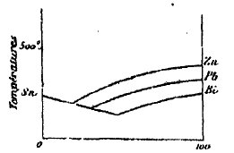
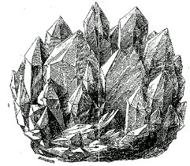
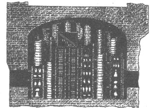
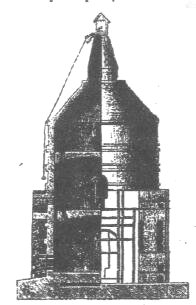
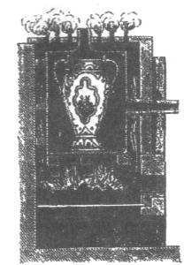
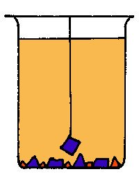
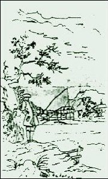
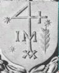

De façon
générale, la pierre des sages fascinait parce qu'on devait
artificiellement la préparer. Maintes recettes à son sujet
font intervenir de l'argile jaune ou
rouge.
L'alchimiste, après la coction, trouvait un bloc
durci
au feu. C'est là qu'il faut
vraisemblablement
voir le début réel de l'alchimie opératoire. Des milliers
d'expériences de ce genre ont dû être pratiquées
; peu à peu, la technique évoluant, les alchimistes ont maîtrisé
progressivement l'art de faire fondre des matériaux divers et celui
de faire apparaître des cristaux. Songeons que les Egyptiens
maîtrisaient
déjà la fabrication de la faïence et du verre ; la faïence
égyptienne fut réalisée
dès l'époque pré-dynastique (-
2000 av. J.-C.). Les Egyptiens
paraissent
avoir connu de temps immémorial l'action vitrifiable des sels
alcalins, chauffés au contact de la
silice. On fabriquait ainsi du verre à Thèbes et à
Memphis, probablement bien avant que les Phéniciens eussent établi
des verreries à Sidon. On faisait usage de sable de quartz très
fin sur lequel on appliquait un enduit vitreux ; on y ajoutait comme
fondant
du carbonate de sodium ou soude
et peut-être des cendres végétales
très alcalines. Après avoir chauffé à une température
inférieure au point de fusion
le mélange, les composants s'aggloméraient. Les Egyptiens
savaient aussi tirer parti de l'ajout d'oxydes métalliques en
petites
quantités pour abaisser
le point de fusion du mélange : ils connaissaient donc - de façon
empirique - le principe eutectique.
L'eutexie est le fait de deux ou plusieurs métaux, qui, fondus
ensemble,
ont une température de fusion inférieure à chacun
d'eux pris isolément. Le diagramme suivant montre, par exemple,
les courbes de fusion de 3 métaux (le zinc Zn, le plomb Pb
et le bismuth Bi quand on les ajoute à de l'étain Sn)

FIGURE
I
Les Egyptiens
connaissaient
aussi les frittes
[une fritte est un
verre qui
a été fondu, refroidi, puis réduit en une poudre pouvant
entrer comme élément dans la composition de glaçures
ou d'émaux]. Ils
mélangeaient
du sable de quartz mêlé à 10% de chaux, à des
oxydes métalliques et à 20% de carbonate de sodium : ils
obtenaient alors un matériau bleu et vert produit par
l'agglomération
du mélange passé au four. Finement broyés, ces éléments
étaient utilisés comme pigments, dont le plus connu est le
bleu égyptien. La même association portée à
une température de 1100°C produisait le verre. On savait le
fondre depuis le milieu du 2ème millénaire av.
J.-C.
- On comprend sous
la dénomination générale d'argiles
tous les silicates d'alumine hydratés, plus ou moins purs, qu'on
trouve à l'état terreux et qui proviennent de la décomposition
des silicates alumineux si abondamment répandus dans les roches
cristallines. Elles sont terreuses, assez tendres pour être rayées
par l'ongle, grasses ou douces au toucher et peuvent durcir au feu
; elles
font une pâte plus ou moins liante avec l'eau qu'elles absorbent
dans une certaine proportion ; quand elles sont sèches, elles
happent
à la langue et exhalent une odeur terreuse lorsqu'on souffle sur
leur surface. A l'état de pureté, celles qui ne sont pas
trop hydratées sont infusibles et insolubles dans les acides ;
lorsqu'elles
contiennent une quantité assez considérable d'eau de combinaison
et lorsqu'elles renferment de l'oxyde de fer, de la chaux ou de la
potasse,
elles deviennent plus ou moins fusibles et attaquables par les
acides.
Les impuretés qu'elles peuvent renfermer sont nombreuses ; tantôt,
elles sont disséminées en fragments beaucoup plus volumineux
que les particules argileuses, tantôt elles ont un degré de
ténuité analogue. Les argiles pures sont blanches, mais celles
que l'on trouve le plus communément sont colorées en rouge
ou en jaune par les oxydes de fer, en gris ou en noir par du
carbone et
du bitume, en verdâtre par du silicate de fer.
L'argile
pure ou kaolin [nom
d'une localité chinoise, Kauling]
provient de la décomposition du feldspath [cf.
section sur le Mercure de nature
et les blasons
alchimiques]
contenu dans les
roches granitiques, porphyriques et quelquefois basaltiques ; il
se trouve
généralement en place dans les terrains riches en Terre
hermétique,
c'est-à-dire les terrains de cristallisation. D'après Brongniart,
les masses minérales auxquelles on donne le nom de kaolin sont de
véritables roches composées : elles renferment une partie
ténue argiloïde qu'on peut séparer par le lavage et
qui seule jouit des propriétés de l'argile : c'est le Soufre
blanc des alchimistes ou 1er Mercure. Le kaolin
argileux
laisse parfois 3 % de sable [cf.
lien
du Mercure] dont la nature
est tantôt
siliceuse, tantôt feldspathique. Le produit final de la
décomposition
feldspathique montre que l'alumine s'est concentrée en retenant
une partie de la silice [c'est
donc
le lien naturel du Soufre blanc, ce qui prend de l'importance
lors
des expériences alchimiques]
et en fixant une certaine quantité d'eau, pendant que les autres
bases sont entraînées avec une grande partie de la silice.
Brongniart écrit :
" Une
circonstance remarquable dans le gisement des roches
kaoliniques, est la
présence constante des roches ferrugineuses dans
toutes les
exploitations de kaolin, depuis la Chine [...] jusque dans les
gîtes
les mieux connus de toute l'Europe [...] Mais c'est surtout
dans [le gîte]
de Annee, près de Schneeberg, qui a fourni pendant longtemps
la
pâte des belles porcelaines de Saxe, que cette association est
des
plus frappante "
Le kaolin
susceptible
d'être employé à la fabrication de la porcelaine est
toujours rare et il est souvent entaché d'un Soufre
rouge, utile à l'alchimiste.
Les
argiles impures sont donc des plus intéressantes à étudier
pour pénétrer l'Art sacré. On distingue
d'abord les argiles plastiques qui fournissent la terre à faïence
fine et sont très utilisées par les potiers [cf. Piccolpassi]
; les argiles figulines sont des argiles liantes mais moins
tenaces que
les précédentes. Elles contiennent des résidus mercuriels
[chaux à l'état de carbonates] et elles sont plus ou moins
souillées de Soufre rouge. Elles rougissent ou jaunissent à
une haute température ; enfin, sans se fondre, elles se couvrent
d'une espèce de vernis et se ramollissent à une température
élevée, signant par là leur nature mercurielle. Elles
sont employées dans la fabrication des briques et expliquent que
les alchimistes aient toujours affirmé que le pauvre comme le
riche
possédait la matière première [l'allégorie
est assez piquante, il faut en convenir].
Nous
avons ensuite les argiles smectiques ou terres à foulon : ces
argiles sont grasses au toucher, onctueuses. Au feu, elles se
déforment
en perdant leur eau de combinaison et sont presque toujours très
fusibles à cause des impuretés qu'elles renferment. La terre
à foulon sert principalement au dégraissage des draps et
autres étoffes de laine parce qu'elle absorbe les huiles dont on
a imprégné ces tissus pour faciliter les premières
opérations de la filature et du tissage
[il
faut ici signaler la valeur hermétique de l'analogie
entre d'une part, la filature et la préparation du Mercure
philosophique
et d'autre part, le tissage et l'accrétion progressive des deux
principes Soufre blanc et Soufre rouge].
Le
bélier,
le blanchiment ont toujours été parmi les plus hauts symboles
de l'alchimie et il n'est point d'adepte qui ne soit venu à en
parler... Les
marnes [auxquelles B.
Pallissy
a consacré un livre] sont formées d'un mélange mécanique
de carbonates de chaux et d'argiles ; selon qu'un des deux
principes domine,
on les nomme marnes calcaires ou marnes argileuses. Leur intérêt
hermétique est notable car elles livrent, par leur décomposition,
l'un des principaux composants du Mercure philosophique [cf.
section sur la réincrudation].
Elles sont bien sûr effervescentes avec les acides et sont très
fusibles ; elles sont employées pour l'amendement des terres et
ont
donc ce privilège d'être utiles aussi bien dans l'agriculture
terrestre vulgaire que dans l'agriculture
céleste vouée à Hermès. Elles ajoutent
aux terres le silicate d'alumine et surtout la chaux carbonatée
; par là elles rendent les terres légères plus consistantes
; notons que l'effet des marnes, en alchimie, peut être visible au
2ème oeuvre dans la réparation du Mercure [qui
est l'objet de cette page]
et au 3ème
oeuvre où il convient de donner un peu de fixité au Soufre
blanc.
Les argiles
ocreuses
nous offrent ensuite un vaste déploiement de couleurs qui n'a rien
à envier avec la queue de paon : à l'état normal ou
calcinées, ce sont les ocres jaunes, rouges ou brunes, la terre
d'ombre, la terre de Sienne, la terre d'Italie, le brun roge, le
rouge
d'Angleterre... Ces argiles se trouvent à la limite des terrains
crétacés et des terrains tertiaires. La couche d'ocre repose
sur de la limonite endurcie par accrétion, laquelle s'appuie
sur l'étage des sables ferrugineux.
L'art de travailler
les argiles pour les transformer en vases d'ornements ou en
ustensiles
est appelée céramique [keramoV].
Nous signalerons au lecteur intéressé, d'un petit trait de
cabale, la proximité du mot kerameia
[art
du potier] avec le mot keraia
[pince
d'écrevisse, croissant de lune, branche de compas],
qui atteste de l'unité symbolique entre le Soufre blanc et le
croissant
de Lune en son dernier quartier. Suivant Tylor, le vase en
bois
ou la corbeille de jonc ou d'osier aurait été le premier
substratum de la céramique ; cela par analogie nous conduit à
un tressaillage [panier
d'osier]
et de là au filet dont on connaît la valeur symbolique [cf.
section des blasons alchimiques].
b)-
fusion
des métaux : les hommes ont maîtrisé la conduite
de la fusion des métaux après s'être dans un premier
temps servis de pierres siliceuses. A ce sujet, il vaut de citer
un passage
de L'Introduction
à
la Chimie des Anciens de M. Berthelot
au mot Mercure,
puisqu'il a directement rapport avec la fusion des métaux. Pline
distingue l'argentum vivum, métal
natif,
et l'hydrargyrum ou argent liquide,
métal
artificiel. Il prépare celui-ci sans distillation, en broyant le
cinabre et le vinaigre dans un mortier de cuivre avec un pilon de
cuivre.
On obtenait aussi le mercure en plaçant le cinabre dans une
capsule
de fer, au milieu d'une marmite de terre, surmontée d'un chapiteau
(ambix), dans lequel se condensait la vapeur sublimée : on lit
dans
Dioscoride :
« La
vapeur sublimée adhérente à l'alambix, raclée
et refroidie devient mercure. »
-
C'est l'origine de
l'alambic. Dans Aristote se trouve ce curieux passage :
« Quelques-uns
disent que l'Âme communique au corps son propre mouvement :
ainsi
fait Démocrite, lequel parle à la façon de Philippe,
auteur comique. Ce dernier dit que Dédale communique le
mouvement
à une Vénus de bois, en y plaçant de l'argent liquide ».
(De Animâ, chap. 3)
C'est déjà
le principe de l'expérience du culbuteur chinois, que l'on fait
aujourd'hui dans les Cours de Physique. Mais on peut aussi y
deviner
l'origine de quelques-unes des idées mystiques des Alchimistes,
qui ont pris au sérieux les apparences tournées en
plaisanterie par
les anciens Grecs. Le mercure des philosophes, ou matière première
des métaux, représentait pour les Alchimistes une sorte de
quintessence du mercure ordinaire ; ces deux corps étant tantôt
confondus, tantôt distingués. C'est dans ce sens qu'il convient
d'entendre ce qui suit :
« D'après
les Alchimistes du Moyen Âge, !e mercure est l'or vivant; la
mère
des métaux. Il les engendre par son union avec son mâle, le
soufre ; il tue et fait vivre ; il rend humide et sec ; il
chauffe et refroidit,
etc. L'Eau c'est Adam, la Terre est Eve »
(Rulandus, Lexicon
Alchemiae),
[...]
Tout ceci atteste
la persistance des vieilles formules, à travers le Moyen Âge
; car la dernière assimilation remonte à Zosime
et aux gnostiques. Citons encore quelques-uns des synonymes
alchimiques
du mercure :
« Aquam
auteur simplicem, alias voyant venenum, argentum vlvum, cambar,
aquam permanentem, gomma, acetum, urinant, aquam maria,
Draconem, serpentem.»
[in Turba
philosophorum, biblioth. Chem. de Manget, t.I,
p.500]
On lit les noms
suivants
du mercure dans Vincent de Beauvais [Speculum
majus, VIlI, 62]
:
« Acetum
attrahens, et aqua aggrediens et oleum mollificans... serves
quoque fugitivus »
[cf. aussi Ostanès].
Puis vient un
dialogue
entre l'or et !e mercure. L'or dit au mercure
« Pourquoi
te préfères-tu à moi ? je suis le maître des
pierres qui ne souffrent pas le feu. Et il lui répond: Jet'ai
engendré
et tu ne sais pas que tu es né de moi. Une seule partie tirée
de moi vivifie un grand nombre des tiennes; tandis que dans
ton avarice
tu ne donnes rien de toi dans les traitements. »
Le mercure est
présenté
comme l'élément de tous les corps métalliques liquéfiables
par le feu; après leur liquéfaction, ils prennent l'apparence
rouge. On peut ajouter que l'on trouve un dialogue entre l'or et
le mercure,
à la fin de la Nouvelle
Lumière
Chymique, d'Alexandre Sethon. D'après
Avicenne [Bibl.chem.de
Manget,
t.I, p.627] :
« Le
mercure est le serpent qui se féconde lui-même, engendrant
en un jour ; il tue tout par son venin ; il s'échappe du feu.
Les
sages le font résister au feu : alors il accomplit les oeuvres
et
mutations... Il se trouve dans tous les minéraux et il possède
avec tous un principe commun ; c'est la mère des minéraux.
Un seul métal tombe au fond, c'est l'or et par là tu connais
le plus grand secret, parce que le mercure reçoit dans son-
sein
ce qui est de la même nature que lui. Il repousse les autres,
parce
que sa nature se réjouit plus avec une nature pareille qu'avec
une
nature étrangère. Il est le seul qui triomphe du feu et n'est
pas vaincu par lui ; mais il s'y repose amicalement... II
contient son
propre soufre excellent, par lequel on fixe l'or et l'argent,
suivant le
mode de digestion. »
Sur les métaux
et la génération des métaux, M. Berthelot ajoute que
[...] les métaux sont formés d'eau et de terre, d'après
Aristote [Météor,l.
IV, chap. 8]: ce
qui exprime
leur fusibilité et leur fixité, aussi bien que leur aptitude
à être changés en oxydes. Aristote [De
Generatione, t. I, chap.10]
distingue encore les corps en réceptifs ou passifs, et actifs ou
donnant la forme [...]. C'est ainsi que l'étain disparaît, en
subissant
l'influence de la matière du cuivre qui le colore [...] Nous
touchons
ici aux notions alchimiques. Un autre passage d'Aristote traite de
l'exhalaison
sèche et de l'exhalaison humide, laquelle produit les métaux.
Une partie de ceci rappelle, sous une forme plus vague, les
théories
actuelles sur les minéraux de filons, produits par les vapeurs
souterraines.
Et ailleurs [Météor.,l.
IV,
ch.2]:
«
L'or, l'argent, le cuivre, l'étain, le plomb, le verre et bien
des
pierres sans nom, participent de l'eau : car tous ces
corps fondent
par la chaleur. Divers vins, I'urine, Ie vinaigre, la lessive,
le petit-lait,
la lymphe participent aussi de l'eau, car tous ces corps sont
solidifiés
par le froid. Le fer, la corne, les ongles, les os, les
tendons, le bois,
les cheveux, les feuilles, l'écorce, participent plutôt de
la terre : ainsi que l'ambre, la myrrhe,
l'encens, etc. »
Tous ces énoncés
témoignent de l'effort fait par la science antique pour pénétrer
la constitution des corps et manifestent les analogies vagues qui
guidaient
ses conceptions. La Théorie des exhalaisons
est le point de départ des idées ultérieures sur la génération
des
métaux dans la terre, que nous lisons dans Proclus (voir Origines
de
l'Alchimie, p. 48),
et
qui ont régné pendant le Moyen Âge. On lit encore,
dans Vincent de Beauvais (VIIII,
6) :
« D'après Rhazés,
les minéraux sont des vapeurs épaissies et coagulées
au bout d'un temps considérable. Le vif argent et le soufre se
condensent
d'abord. Les corps transformés graduellement pendant des
milliers
d'années dans les mines arrivent à l'état d'or et
d'argent ; mais l'art peut produire ces effets en un seul
jour. »
Il est
indubitable,
d'après les données que nous avons réunies, que ces
réflexions de Rhazès ne sont pas absolument fausses même
si le délai d'un jour seulement apparaît quelque peu serré.
Dès les temps les plus anciens, ces idées se sont mêlées
avec des imaginations astrologiques, relatives aux influences
sidérales
[cf. humide
radical
métallique et zodiaque
alchimique] . C'est
ainsi qu'on
lit dans la Bibl.
Chem. de
Manget, t. I, p. 913 :
« Les
métaux et les pierres n'éprouvent pas les influences célestes,
sous leur forme même de métaux ou de pierres, mais lorsqu'ils
sont sous la forme de vapeurs et tandis qu'ils durcissent. »
On voit par là
le sens mystique de ces mots attribués à Hermès par Albert
le
Grand :
« la
terre est la mère des métaux ; le ciel en est le père. »
Que nous aurions
aimé qu'Albert le Grand ait dit « minéraux »
au lieu de métaux car, alors, l'allégorie était presque
parfaite ; le ciel doit bien sûr être interprété
selon la cabale : il s'agit de la Rosée
de
mai. De même cet autre axiome hermétique:
« En haut
les choses terrestres ; en bas les choses célestes
»
lequel
s'appliquait
à la fois à la transformation des vapeurs dans la nature
et à la métamorphose analogue que l'on effectuait par l'art
dans les alambics. Cet axiome est retrouvé dans la littérature
alchimique dans le Ciel
terrestre
de Lavinius de Moravie et, plus tardivement encore, dans la Table
d'Emeraude. Avicenne,
après avoir décrit le détail supposé de cette
création des métaux, ajoute :
« Cependant
il est douteux que la transmutation effective soit possible.
Si l'on a
donné au plomb purifié les qualités de l'argent (chaleur,
saveur, densité), de façon que les hommes s'y trompent, la
différence spécifique ne peut être enlevée parce
que l'art est plus faible que la nature »
(Vincent de
Beauvais, VIII,
84).
Albert le Grand (De
Mineralibus, t. III, ch. 9)
dit de même:
« Ceux
qui blanchissent par des teintures blanches et jaunissent par
des teintures
jaunes, sans que l'espèce matérielle du métal soit
changée, sont des trompeurs, et ne font ni vrai or, ni vrai
argent...
J'ai fait essayer l'or et l'argent alchimiques en les
soumettant à
six ou sept feux consécutifs ; le métal se consume et se
perd, en ne laissant qu'un résidu sans valeur. »
Dans le traité
d'alchimie pseudonyme, attribué au même auteur, il est dit
que le fer alchimique n'attire pas l'aimant et que l'or alchimique
ne réjouit
pas le coeur de l'homme et produit des blessures qui s'enveniment
; ce
que ne fait pas l'or véritable. De tous les métaux connus
à l'époque, le plomb
et l'étain
formaient une branche importante du commerce des Phéniciens et des
Carthaginois avec l'Espagne et les Iles Britanniques (les
Cassitérides). Ces deux
métaux
étaient employés dans l'affinage de l'argent et de l'or.
Le blanc de plomb (cerusa
des Romains, psimmythion des Grecs)
se fabriquait en grand à Rhodes et à Corinthe. L'étain,
auquel l'épithète de brillant (Kassiteros
faeinos) est attribué dans
les
Poèmes Homériques, servait à la fabrication de boucliers
(1, 2)
et d'autres ustensiles. Les vases étamés des Gaulois [vasa
incoctilia] étaient
fort
estimés des Romains. En faisant fondre les minerais de cuivre avec
l'étain, on obtenait directement l'airain
(kalkoV,
aes).
En
traitant la limaille de cet alliage par du vinaigre, on obtenait
l'aerugo
des Romains ou l'ios
des Grecs. Ce même nom se donnait aussi à la matière
qu'on obtenait en chauffant des clous de bronze ou de cuivre
saupoudrés
de soufre dans un vase de terre, et en exposant le produit de la
calcination
à l'humidité.
c)-
le
blanchiment : des corps non métalliques étaient également
connus, notamment le borith et le neter.
Ces corps étaient connus des Hébreux et utilisés pour
le blanchiment des étoffes. Ils préparaient la première
de ces substances en filtrant de l'eau à travers des cendres
végétales,
et en évaporant jusqu'à siccité la liqueur filtrée.
Le borith était donc du carbonate de
potasse (sel
végétal) impur (1).
Quant
au neter, c'était du natron [et
non
du nitre comme son nom pourrait le laisser supposer],
c'est-à-dire du carbonate de soude
impur (2). Il était
fort connu dans certains lacs d'Afrique. Le nitre (nitrate
de potasse) se retirait en
quantité
importante des cavernes de l'Asie, appelées
colyces. L'usage du nitre était assez
réduit au temps des Romains. Ce n'est que vers le XIIIe
siècle qu'il reçut le nom de sel de pierre ou salpêtre
(sel patrae).
Le nitre était connu des Grecs sous le nom de Ajronitrum.
Aucun de ces sels alcalins n'était autrefois connu à l'état
de pureté. Les épithètes de rouge, jaune, gris, bleu,
appliquées à ces sels [et
dont on peut se demander s'ils n'ont pas quelque rapport avec
les couleurs
évoquées par Philalèthe dans le 3ème
oeuvre...] prouvent donc
qu'il s'agissait
de substances impures. La substance que les Grecs et les Romains
désignent
par le mot nitrum [nitron]
est tantôt la potasse du commerce [au
XIXe siècle],
c'est-à-dire
de l'alkali fixe impur et plus rarement le nitre proprement dit.
La potasse,
appelée plus tard sel alcali végétal, se préparait
en filtrant l'eau à travers les cendres des végétaux
[lixiviation]
; pour cette opération, les Anciens choisissaient de préférence
les cendres de chêne [ce
qui
nous intéresse au premier chef],
de
la vigne et de la fougère. Les Anciens n'ignoraient pas que le
sel végétal [borith] se liquéfie facilement au contact
de l'air humide et qu'en cela il diffère d'un autre sel analogue
[natron] qui se change à l'air en poussière blanche
[efflorescence].
On faisait un grand usage de ces sels alcalins dans la préparation
du
verre.
De la Cyrénaïque,
principalement des environs du temple de Jupiter
Ammon
(voir 1,
2, 3,
4, 5),
venait le sel, nommé ammos, qui signifie en grec sable.
C'était le sel ammoniac, facile à distinguer du sel marin
par sa forme cristalline et fibreuse. Dioscoride (Mat.
Med. , V, 126)
en disait :
« le
sel ammoniac est facile à diviser dans le sens de ses fibres
droites ».
Nous avons déjà
beaucoup parlé des aluns
; cela pour dire que, outre la production d'alumine, il ne faut
pas oublier
que l'alun
pouvait
être une source bon marché d'acide
sulfurique. Au temps des Romains, on
retirait
de l'alun, par la calcination et le lavage, une poudre blanche,
légère,
connue sous le nom de terre de Samos, terre de Chio, terre
Cimolienne :
c'était l'alumine (encore
appelée au début du XIXe siècle argile
pure ou kaolin 1,
2, 3,
4, 5,
6, 7,
8, 9,
10).
Les
Romains semblent avoir connu la chaux proprement dite, la chaux
caustique (1, 2, 3),
telle qu'on l'obtient du carbonate calcaire. Ainsi, Pline dit-il (Hist.
Nat., XXXV, 52)
:
"
la
chaux est d'un grand usage en médecine ; fraîchement préparée,
et non mouillée, elle brûle et dissipe les ulcères
et les empêche de prendre du développement.
"
Les Anciens
étaient
loin, cependant, de se douter que l'argile, la base de la faïence,
de la poterie, des briques et des tuiles, était identique avec la
substance blanche (alumine)
qui entre dans la composition des aluns. La fabrication du verre
coloré
était presque aussi ancienne que celle du verre blanc ou incolore.
Le vert-de-gris, la rouille de fer ou tout autre oxyde métallique
pouvait d'abord colorer accidentellement une pâte vitreuse. Des
débris
de verre coloré, imitant l'émeraude, le saphir, l'améthyste,
ne sont pas rares dans les tombeaux d'Egypte. Il faut remarquer en
particulier
les pierres bleues,
figurant des scarabées et des perles qui semblent avoir été
obtenues par la fusion d'une masse fibreuse avec de l'oxyde de
cobalt.
Les Anciens savaient en outre depuis longtemps que les cendres des
végétaux
communiquaient à l'eau la propriété de nettoyer les
étoffes ; et sans doute, ils ne tardèrent pas à découvrir
que l'eau filtrée à travers des couches de cendres est chargée
d'un sel particulier qui reste, après l'évaporation de l'eau,
au fond du vase [c'est
ce qui
lui a valu plus tard le nom de pott-asche - cendre ou résidu de
pot - d'où l'on a fait par corruption, potasse].
La lixiviation - qui est cette opération de passage dans des
cendres
- est très ancienne. Toutes les plantes donnent, par incinération
et lixiviation, des sels [carbonates]
alcalins propres au blanchiment. On lavait les vêtements dans des
espèces de fosses qui servaient de cuves ou de chaudière
de lavage. Jérémie, qui écrivit vers le VIIIe
siècle avant notre ère [c.
II,
t. 22], disait déjà
:
"Quand
vous vous laveriez avec du nitre [neter] et que vous vous
nettoieriez avec
du borith, vous demeurerez toujours souillés, etc."
On savait que le
neter est une substance qui fait effervescence, ce qui le
distingue du
borith qui tombe en deliquum [on
dit
aussi par défaillance].
Salomon dit que les cantiques que l'on chante contre le méchant
sont comme le vinaigre sur du neter. Le natron des Grecs a la même
étymologie que le neter et se trouve aujourd'hui dans certains
lacs
de l'Orient : c'est une espèce de carbonate de soude qui fait
effervescence
avec le vinaigre et qui sert aux mêmes usages que le borith,
employé
pour blanchir les étoffes.
d)-
l'Art
sacré : les documents authentiques dans lesquels on remarque
pour la première fois le nom de chemia et d'alchemia, donné
à une science qui jusque là ne paraissait pas avoir de nom,
remontent au IIIe ou au IVe siècle de notre
ère. Scaliger parle d'un manuscrit de Zosime
(intitulé itmat,
phonétiquement proche par hasard de l'antimoine arabe : ithmid]
dont il cite le passage suivant :
" Les
écritures sacrées disent que les anges, épris d'amour
pour les femmes, enseignaient à celles-ci toutes les oeuvres
de
la nature. De ce commerce des anges avec de simples mortelles
naquit la
race des géants. Le livre dans lequel ils enseignaient les
arts
est appelé cema ; de là le nom de chemin, appliqué
à l'art principal. "
[in Ola. Borrichii de Ortu
et progressu
Chemiae, Bibl. Manget, T. 1]
;
St Clément
d'Alexandrie parle d'une tradition analogue sans se servir du mot
de chemia.
Alexandre d'Aphrodise, célèbre commentateur des oeuvres
d'Aristote,
parle dans le commentaire des Météorologiques
- à propos de la fusion et de la calcination - d'instruments
chimiques
ou chymiques. Le creuset [qeganon]
destiné à faire fondre des métaux était un
de ces instruments. Il semble bien que le mot chimie vienne de ceo
[ceuoV],
couler, fondre ; de là cuica
ou cumica organa
qui signifie instrument chimique ou chymique. Jul. Firmicus, en
parlant
de l'influence des astres sur les dispositions intellectuelles de
l'homme,
dit :
" Si
c'est Mercure, il s'adonnera à l'astronomie ; -si c'est Mars,
il
embrassera le métier des armes ; -si c'est Saturne, il se
livrera
à la science de l'alchimie [scientia
alchemiae]. "
Il paraît certain
que le nom grec de chemia n'était pas d'abord adopté d'un
commun accord par toutes les nations, comme il le fut par la
suite. Art
sacré, science divine, science occulte, art de Thath ou d'Hermès,
etc., tels étaient d'abord les noms appliqués, dans chacune
des langues anciennes, de la chimie et en premier lieu de
l'alchimie.
On peut attribuer
aux prêtres de l'Egypte, aux initiés de Thèbes et de
Memphis, la connaissance de l'art sacré. C'est dans les temples
que les prêtres pratiquaient l'art sacré et c'est là
qu'ils avaient établi leurs laboratoires. Le laboratoire du temple
avait fourni le fait et l'imagination du prêtre, la théorie
[du moins est-là ce
que
pense Ferdinand Hoefer]. Il
est de
fait que l'initié de l'art sacré était persuadé
de pouvoir faire en petit ce que le démiurge ou le dieu créateur
avait fait en grand [le
chimiste
agrège et désagrège, combine et décompose la
matière sur laquelle il opère].
Il
n'en sera pas autrement avec les expériences menées par
les minéralogistes français du XIXe siècle
; certes, le paradigme sera différent et l'obtention des minéraux
artificiels sera mené au plan scientifique, débarassé
de son cortège sacramental qu'il n'eut pas manqué d'avoir
: à des époques antérieures, de telles expériences
devaient forcément susciter l'admiration de tous et élever
l'officiant à une dignité suprême...
Notre propos est
précisément d'essayer de montrer que de telles recherches,
menées certes de façon bien plus primitive, ont dû
exister du temps des laboratoires égyptiens et qu'elles
constituent
en définitive l'objet même de l'alchimie.
Poursuivons...
Transportons-nous
par la pensée au temps de Zosime
le Panopolitain [1,
2]
ou d'un des grands maîtres de l'art sacré et assistons en
tant qu'apprenti initié à quelques unes des opérations
pratiquées dans les temples :
- on chauffe de
l'eau ordinaire dans un vase ouvert. l'eau bout et se réduit
en un corps aériforme [vapeur],
laissant
au fond du vase une terre pulvérulente, blanche. A l'époque,
on pouvait conclure que l'eau s'était changée en air et en
terre ; à notre époque, on sait que l'eau tient des matières
en dissolution, lesquelles se déposent au fond du vase ;
- on porte un fer
rougi au feu sous une cloche maintenue sur une cuvette
pleine d'eau ; le volume d'eau diminue ; une bougie, portée sous
la cloche, allume aussitôt l'air qui s'y trouve. A l'époque,
on pouvait conclure que l'eau se changeait en feu ; à notre
époque,
nous savons que l'eau se compose de deux corps aériformes (oxygène
et hydrogène) ; que l'un (l'oxygène)
est absorbé par le fer et que l'autre (hydrogène)
s'échappe sous la cloche en prenant la place de l'air
atmosphérique
qui s'y trouve, et que c'est l'hydrogène qui s'allume au contact
d'une flamme ;
- on brûle (calcine)
du plomb ou tout autre métal (excepté
l'or
et l'argent) au contact de
l'air
: il perd aussitôt ses propriétés primitives et se
transforme en une substance pulvérulente, en une espèce de
cendre ou de chaux.
En reprenant ces cendres, qui sont le résultat de la « mort
» du métal, et en les chauffant dans un creuset avec des grains
de froment, on voit bientôt le métal renaître de ses
cendres et reprendre sa forme et ses propriétés premières.
A l'époque, on pouvait penser que le métal, détruit
par le feu, est revivifié [réduit
ou
désoxydé] par les
grains de froment et par l’action de la chaleur : on ignorait
alors complètement
le phénomène de l'oxydation et la réduction des oxydes
au moyen du charbon ou d'un corps organique riche en carbone, tel
que le
sucre,
la farine, les semences, etc. [cela,
par parenthèse explique nombre d'allégories où le
sucre, le miel,
les grains
de blé sont l'objet d'une riche iconographie].
De fait, les grains de froment étaient le symbole de la vie et,
par extension, le symbole de la résurrection et de la vie
éternelle
: on les considérait tels, parce qu'ils étaient employés
pour ressusciter et revivifier les métaux morts ou réduits
en cendres [ce n'est
point autrement
que Fulcanelli parle de la réincrudation,
c'est-à-dire de l'action de rajeunir le métal]
;
- on calcine du
plomb argentifère dans des coupelles faites avec des
cendres ou des os pulvérisés. Le plomb se réduit en
cendre, il disparaît dans la substance de la coupelle et à la fin
de l'opération, il reste au fond de la coupelle un bouton d'argent
pur. Le plomb ayant disparu sans que l'opérateur sache pourquoi
ni comment, quoi de plus naturel que de conclure qu'il s'était
transformé
en argent ? Cette opération n'a certainement pas peu contribué
à faire accréditer une opinion ancienne, selon laquelle le
plomb peut se transformer en argent. Les phénomènes remarquables
de l'iris et de l'éclair que présente l'argent soumis à
la coupellation, devaient aussi singulièrement occuper
l'imagination
de l'artiste sacré...
[la
coupellation est une opération très anciennement connue :
les alchimistes la connaissaient évidemment et dans la section
chimie
et alchimie, nous montrons - d'après Bernard
Husson - que les alchimistes eux-mêmes n'étaient pas dupes
de ces procédés et les dénonçaient, tel Michel Maïer,
à qui nous devons la somptueuse Atalanta
fugiens] ;
- on verse un
acide fort sur du cuivre : le métal est attaqué
et finit, au bout d'un certain temps, par disparaître, en donnant
naissance à une liqueur verte, aussi transparente que l'eau pure.
En plongeant dans cette liqueur une lamelle de fer, on observe que
le cuivre
reparaît avec son aspect ordinaire en même temps que le fer
se dissout à son tour... quoi de plus simple que de conclure - à
l'époque - que le fer s'est transformé en cuivre ?
De tout cela,
quelle
conclusion pouvons-nous tirer ? Ferdinand Hoefer considère que la
fameuse théorie de la transmutation des métaux, adoptée
par les alchimistes, est fondée sur quelques faits réels
mais mal interprétés. Le point de départ du raisonnement
était l'observation et l'imitation
de la nature. Les métaux étaient assimilés à
de véritables êtres animés ayant, comme les végétaux
et les animaux, leur vie propre. Eugène Chevreul semble d'un avis
un peu différent et considère que l'idée alchimique,
en soi, était logique au point de vue de la doctrine de Platon et
d'Aristote ; et que les Anciens imaginaient préparer une sorte de
levain qui permettait de fermenter l'or alchimique pour le faire
croître
et multiplier [cf. Résumé
de l'Histoire de la Matière, in Idée
alchimique,
II]. La science du Grand
oeuvre ne
consistait pas seulement dans l'étude des métaux, des lettres
et de leurs combinaisons. C'était la science de l'univers,
entourée
de symboles et de mystères qui étaient tous, à l'origine,
fondés sur quelques faits d'observation. Les trois principes (matière,
vie, intelligence), exprimés
symboliquement par les trois côtés d'un triangle équilatéral,
représentaient tout ce qui est [Timée
de Platon]. L'Isis blanche
et noire,
telle qu'on la voit sur des papyrus du Louvre [sur
l'Isis hermétique, cf. Idée
alchimique I ; sur l'Isis romaine, cf. Gardes
du
corps] ; le basilic et
l'aspic
placés sur le front d'Isis [on
retrouve
des signes identiques dans l'alchimie occidentale et ces deux
derniers se retrouvent sur le caducée de Mercure],
tous ces symboles paraissent représenter la lumière et les
ténèbres, la vie et la mort. Ce dualisme se retrouve au fond
de presque toutes les doctrines religieuses et scientifiques
anciennes.
Le panthéisme mystique des Egyptiens repose principalement sur les
nombres binaire, ternaire et quaternaire. A ces nombres
mystiques,
il faut ajouter encore les nombres cinq,
sept, le carré de trois (neuf) et le
nombre quinze,
comme étant le résultat de l'addition des trois premiers
nombres impairs [3 +
5 + 7 =
15]. L'autel en forme de
coupe dont parle Zosime,
dans son traité sur la composition des eaux, a quinze degrés.
Et le sceau d'Hermès ou de Mercure, avec lequel les alchimistes
cachetaient les flacons contenant les substances destinées au
grand
oeuvre, représente une combinaison mystique de différents
nombres
[cela
fait notamment référence à Moïse, philosophe
hébreux, qui dans son allégorie de la création du
Monde, applique le mercure au 7ème jour dont il fait
un jour de repos pour indiquer que ce métal, n'étant ni solide
ni malléable, avait besoin d'une préparation différente
des autres].
Si dans les
mystères
de l'art sacré les nombres jouent un rôle important, les lettres
y ont également une grande valeur. Tel est le cas du mot mystique
AZOTH,
qui est le titre d'un traité d'Alchimie que Fulcanelli attribue
à senior Zadith.
Parmi les animaux
sacrés, on remarque en particulier le lion,
l'aigle,
la salamandre et le dragon. Le lion
jaune était ordinairement le symbole des sulfures jaunes, le lion
rouge celui du cinabre et le lion vert désignait les sels de
cuivre
et de fer [il devait
s'agir
des sulfates ou vitriols].
L'aigle
noir représentait les sulfures noirs, et plus particulièrement
le sulfure noir de mercure. F. Hoefer pense qu'une phrase comme «
l'aigle
noir se transforme en lion rouge
» signifie que le sulfure noir de mercure, par la voie de
sublimation,
se transforme en sulfure rouge. Mais l'alchimiste au fait de la
cabale
hermétique comprendra que la phase de dissolution est terminée
et que la fermentation du Rebis commence...
Les signes
du zodiaque étaient employés pour désigner
les saisons et les époques propices aux opérations du Grand
oeuvre. L'astrologie était l'auxiliaire indispensable de l'art
sacré
et les Adeptes avaient aussi une grande confiance dans l'influence
des
différentes périodes de la lune
[en
fait, nous savons que la référence aux saisons ne vaut que
pour les minéraux qui sont voilés sous les signes du zodiaque
et que les phases de la lune se rapportent au degré de
température
à une époque donnée de l'oeuvre ou à certains
composés : ainsi, le premier quartier symbolise-t-il le Mercure
Philosophique alors que le dernier quartier symbolise le Soufre
blanc].
Parmi les produits
d'animaux employés dans les opérations mystiques de l'art
sacré, on remarque surtout le lait et l'oeuf. Le lait d'une vache
noire [symbole des
eaux de l’abîme]
désignait le mercure car c'était une opinion depuis longtemps
reçue que les métaux se composent de soufre et de mercure.
Le lait d'un animal quelconque représentait le soufre « qui
coagule le mercure » de même que que le lait est susceptible
de se coaguler [nous
avons vu
dans la section du Bain des astres,
que
la coagulation ou plutôt la formation d'une pellicule à la
surface du composé signalait le début d'une cristallisation
par un phénomène de sursaturation].
L'oeuf des
philosophes
[voyez l'Oeuf
philosophal,
dernier chapitre de l'Alchimie expliquée sur ses Textes
classiques
d'E. Canseliet] représentait
le monde dont la coque était la terre, le blanc et le jaune les
autres éléments. Cet oeuf était ordinairement entouré
d'un cercle d'or représentant le zodiaque. Sur les monuments
druidiques
[druV
:
chêne]
on rencontre également l'oeuf comme symbole du monde, façonné
par deux serpents. La pierre philosophale
était tantôt du cinabre, tantôt du soufre ; pour les
uns, c'était l'arsenic qui blanchit le cuivre, pour les autres,
la cadmie qui le jaunit. Pour tous, c'était une substance qui
avait
la vertu de transformer les métaux imparfaits en or ou en argent
et de procurer ainsi une richesse immédiate [voyez
la section sur l'analyse des transmutations].
Comme la richesse n'a aucune valeur si celui qui la possède ne
peut
en jouir, la pierre philosophale devait être nécessairement
accompagnée de cette autre pierre qui était la panacée
universelle, assimilée à l'élixir philosophal. Comme
cette recherche était intimement liée à des croyances
mystiques et religieuses, il fallait absolument franchir les
limites de
la sphère terrestre pour aborder les régions supérieures
de la vie spirituelle. C'est alors que l'adepte cherchait à
s'identifier
à l'âme du monde. En résumé,
F. Hoefer considère qu'il y a trois catégories distinctes
de l'art sacré :
- la
pierre philosophale ;
- la panacée
universelle ;
- l'âme du monde
Toutefois, ces
catégories
n'étaient pas si distinctes que cela car le ciel et la terre,
envisagées sous une approche néoplatonicienne,
ne formaient qu'un tout, véritable labyrinthe où la raison
se perd et l'imagination s'égare. Cependant, au milieu de cette
confusion, on remarquait la conservation d'un principe fondamental :
la
suprématie de l'esprit sur la matière. Aussi l'oeuvre que
l'Adepte pratique s'appelle-t-il grand et l'art qu'il cultive est-il
sacré
et divin.
Il nous faut à
présent reparler d'Hermès
Trimégiste que nous avons brièvement cité
dans notre première
section
sur les textes. Les alchimistes l'invoquent comme un
oracle auquel ils font remonter l'origine de l'art alchimique.
Mercure
était, par une tradition universellement répandue, vénéré
comme l'inventeur de tous les arts, chez les Egyptiens comme chez
les Gaulois.
Cicéron ne compte pas moins de sept Mercure qui tous recevaient
un culte divin [De
Nature
Deorum, III].
Vulcain, That
et Cadmus
passent également pour avoir inventé plusieurs arts qu'on
mit plus tard sur le compte de Mercure ou d'Hermès. Vulcain ou Phtha,
symbole du feu, était l'objet d'un culte particulier chez les
prêtres
d'Egypte. That, dont parle Platon, représente Hermès et porte
le nom de trois fois grand. Quand à Cadmus [que
nous avons souvent cité],
les
Grecs le font venir de Phénicie et son nom grécisé
signifie « du
côté
de l'Orient » [on
remarquera un cousinage de cabale entre Cadmus et le chien du
Corascène,
envisagé par rapport à la chienne d'Arménie, qui vient
de l'Occident, cf. Livre
Secret
d'Artephius]. Il est à
remarquer
que toutes les fois qu'il est question, dans les livres anciens -
ou modernes,
voir Fulcanelli - sacrés ou profanes, de quelque art jusqu'alors
inconnu, on le fait venir du pays de
l'Orient,
comme de la source primitive de toute science. Faut-il y voir une
simple
métaphore du soleil levant ? Nous serions tenté de répondre
par l'affirmative tant est prégnante dans l'oeuvre la relation à
l'étoile du matin, symbole de Vénus-Aphrodite autant que
de la terre primitive [Virga
paritura de Fulcanelli]
; mais
on peut aussi considérer cela comme l'indice d'une communication
fort ancienne de la communication la plus reculée vers l'Orient,
des Chinois, avec les Assyriens, avec les Perses et les Egyptiens,
car
l'éclosion de l'art sacré semble tirer son origine d'un noyau
primitif se situant au Moyen Orient...
Hermès, donc,
tout à la fois dieu du ciel et de l'enfer, évoquait d'après
les croyances mythologiques, les âmes des décédés
et opérait avec son caducée
des transmutations et des miracles... C'est pourquoi les
philosophes mystiques
et les alchimistes ne pouvaient choisir comme référent suprême
qu'Hermès.
De là, l'art sacré - promu art transmutatoire - reçut
le nom d'art hermétique et il n'est pas étonnant que le métal,
si utile à l'affineur et à l'orfèvre, que les anciens
appelaient eau-argent,
fût consacré à cette divinité. Il semble pourtant
que les choses se soient beaucoup compliquées depuis, car, on l'a
vu, des nombreux traités qu'Hermès aurait écrit, pas
un seul n'existait dans les temples d'Egypte. Les écrits qui nous
restent, le « Corpus
hermeticum »
qu'André-Jean
Festugière a étudié dans une somme monumentale : la Révélation
d'Hermès
Trimégiste (Les
Belles-lettres, trois vol., réed. 1990),
renferment
des emprunts aux livres de Moïse et de Platon. Ces écrits
datent en fait de l'époque où la religion chrétienne
s'est imposée face au paganisme ; ils étaient destinés
à être pour les païens
ce que la bible est pour les chrétiens. C'est de cette époque
que l'on fait remonter un écrit comme la Table
d'Emeraude, qui semble en fait dater de
l'époque
médiévale. Déjà, les pères de
l'Eglise, entre autres St Cyrille, avaient remarqué que les écrits
hermétiques avaient mis à profit les livres de Moïse
et de Platon. Les documents relatifs à l'art sacré nous
intéressent
car plusieurs manuscrits contiennent quelques explications sur des
termes
chimiques :
nitre
[nitroh]
: soufre blanc [qeion
leucon]
qui produit l'airain
suie [aiqalh]
: poison de la suie
cadmie [cadmeia]
: magnésie [magnhsia]
eau divine [qeion
udwr] : blanc
d'oeuf
terre égyptienne
[aiguptia]
: terre de poterie
claudien
[claudianoV]
: chaux brûlée des coquilles
d'oeuf
airain
: coque
d'oeuf
fleurs jaunes : pierres d'or
magnésie : antimoine femelle de
Macédoine
chélidoine : teinture d'or
sperme de Vénus : fleur du
cuivre
lait d'un animal : soufre
lait d'une vache noire :
mercure (vache
noire = fertilité ; vache rousse = stérilité)
grenouillette [batracion]
: vert de montagne
éponge de mer [spoggoV
oclassioV] :
cadmie
dragon rouge : cinabre
|
Ajoutons que les
maîtres de l'art sacré ne se contentaient pas de cacher leurs
doctrines mystiques sous le voile d'un langage obscur, figuré et
énigmatique ; ils employaient aussi des signes particuliers,
plusieurs
d'entre eux ayant une analogie évidente avec les hiéroglyphes.
Par exemple, la lettre K est l'initiale du creuset [cecanminoV]... Mais, nous dira-t-on,
quel est le rapport direct entre l'Art sacré tel qu'il était
pratiqué par les prêtres de l'Egypte et le Mercure philosophique
? Tout simplement l'art
du
verre dont il nous faut à présent
parler avant d'aborder les synthèses minéralogiques réalisées
au XIXe siècle. On lit dans une Notice sur la verrerie
égyptienne, qui fait partie du grand ouvrage de la Description de
l'Egypte [2e
édit.
Panckoucke, 1829, t. IX]
:
Les prêtres de l'Egypte, sans
cesse
occupés d'expériences, ont fait dans leurs laboratoires
particuliers,
du verre comparable au cristal de
roche. Profitant
de la propriété qu'ils ont reconnue aux oxydes
des substances métalliques, qu'ils tiraient principalement
de l'Inde,
de se vitrifier sous des couleurs différentes, ils ont conçu
et exécuté le projet d'imiter toutes les espèces de pierres
précieuses
colorées, transparentes ou opaques que
leur fournissait le commerce du même pays.
Strabon et tous les historiens ne
se réunissent-ils
pas pour apprendre qu'on fabriquait de temps immémorial en
Egypte,
et par des procédés secrets, des verres très beaux, très
transparents, des verres dont les couleurs étaient
celles
de l'hyacinthe,
du
saphir, du rubis, etc., qu'un des souverains de ce pays
était parvenu
à contrefaire la pierre précieuse nommée Cyanus
; que Sésostris avait fait couler ou sculpter du verre de
couleur
d'émeraude une statue qu'on voyait encore à Constantinople
sous le règne de Théodose ; qu'il existait aussi du temps
d'Apion Plistonique, dans le labyrinthe d'Egypte, un colosse
en verre ;
qu'on faisait enfin avec la scorie des métaux un verre noir
qui
ressemblait au jaïet,
substance, dit
Pline, qu'on a mise en oeuvre avant d'avoir imaginé de la
remplacer
par le verre.
En faut-il davantage pour prouver
que
les Egyptiens sont les plus anciens fabricants de verre, et
que, puisqu'ils
imitaient les pierres précieuses, ils savaient préparer les
oxydes sans lesquels ils n'auraient pas réussi à faire des verres
colorés, de fausses pierres précieuses et des
émaux...? |
extrait
de
: les Merveilles de l'Industrie : le Verre et le
Cristal, L.
Figuier, 1873
A ce sujet, on
peut
évoquer un travail publié par Marcellin Berthelot [Comptes
Rendus Acad. Sci., CVI, pp. 443-446]
qui traite d'un procédé antique pour rendre les pierres précieuses
et les vitrifications phosphorescentes. La Collection
des
alchimistes grecs, transcrits dans certains
manuscrits
du XIIIe siècle, renferme un petit traité exposant
des procédés pour « colorer
les
pierres précieuses artificielles, les émeraudes, les
escarboucles, les hyacinthes »,
d'après
le livre tiré du sanctuaire du Temple. Ce traité
renferme une série de recettes purement chimiques, analogues à
celle du papyrus de Leide, et dont quelques-unes remontent à la
plus haute antiquité. On y trouve cités plusieurs auteurs
alchimistes égyptiens, tels que Marie, Agathodemon, le
pseudo-Moïse,
Ostanès, Démocrite, ces trois derniers cités dans
Pline [Hist.
Nat.,
XXX, 3]. Les citations
du pseudo-Démocrite
s'en réfèrent à son Traité sur l'art de colorer
les verres, lequel ressemble étonnamment à ceux dont parlent
Sénèque [Epist.
CX] et Diogène Laërce
; cela ferait remonter l'alchimiste que l'on connaît sous le nom
de Démocrite le Mystagogue vers les origines de l'ère chrétienne
[M. Berthelot, Origines
de l'Alchimie, p. 71 et 149].
Il s'agit de procédés permettant d'obtenir des teintures
superficielles ou vernis où sont employés notamment le vitriol
bleu.
Il est donc
probable
que cet Art sacré était pratiqué par de nombreux prêtres
égyptiens ; il importe à présent de distinguer dans
ces travaux les verres simplement teints dans toute leur masse,
des verres
recouverts de peintures à leur surface. Les verriers de l'ancienne
Egypte, les verriers romains et orientaux, fabriquaient des
quantités
énormes de verre teint ou coloré
et on peut même affirmer que le verre coloré fut fabriqué
en premier, précisément à cause des impuretés
que ne manquaient pas d'avoir ses composés [silice,
natron, sable, etc.] sur
lesquels nous
allons bientôt revenir. Quant au verre blanc, il résulte de
l'emploi de matières très pures. Nous restons dans notre
sujet -qui est le Mercure philosophique- en parlant du verre et
même
de la poterie- parce que le verre et la poterie trouvent leur
point de
jonction dans lesglaçures
sur poterie et parce que certains défauts des glaçures, le
tressaillage et plus encore, les cristaux - que nous avons déjà
évoqués dans le commentaire de l'Introïtus,
VII de Philalèthe
- sont à la base de ce qui devait constituer plus tard le
grand sujet des alchimistes.
e)-
le
verre : notre objet n'est pas ici de retracer une histoire
du verre
[cf. l'Histoire
de
la Verrerie de Loysel avec des références
à Bosc d'Antic] mais, par
analogie,
de comprendre comment on peut utiliser certaines substances en les
faisant fondre
puis vitrifier
; cela nous aidera à comprendre comment faire, après, pour
passer à la cristallisation, sans vitrification car là réside
l'un des secrets des anciens alchmistes. Le verre est un véritable
sel : il est formé de silicate à base de potasse ou de soude
et d'oxyde -de rouille, ioV-
de fer, d'alumine [oxyde
d'aluminium] ou d'oxyde de
plomb, dans
lequel on peut remplacer l'une de ces bases par l'autre, pourvu
qu'il reste
toujours dans le composé une base
alcaline
[les bases
principales sont
les oxydes métalliques ; l'allégorie en alchimie est le
piédestal
d'une colonne]. On peut
donner une
autre définition du verre : c'est une substance diaphane, composée
d'un mélange de silicates alcalins et terreux, de couleur
quelconque
[c'est le verre
coloré,
on l'a vu, qui a été préparé le premier, historiquement
parlant], cassante, dure à
la
température ordinaire, fusible à la chaleur d'un feu ardent
et malléable [filant]
dans cet état. Ce produit s'obtient en fondant dans un creuset,
chauffé à haute température, un mélange de
silice et d'une ou de plusieurs bases. Si nous examinons les
différents
verres, on peut proposer le tableau suivant :
|
type
de verre
|
densité
|
silice
|
soude
|
potasse
|
chaux
|
alumine
|
oxyde
de plomb
|
oxyde
d'étain
|
oxyde
de fer
|
|
vitre
|
2.642
|
+
|
+
|
|
+
|
|
|
|
|
|
bouteille
|
2.732
|
+
|
(+)
|
(+)
|
+
|
+
|
|
|
+
|
|
Bohême
|
2.396
|
+
|
|
+
|
+
|
|
|
|
|
|
crown-glass
|
2.487
|
+
|
|
+
|
+
|
|
|
|
|
|
cristal
|
3.255
|
+
|
|
+
|
|
|
+
|
|
|
|
flint-glass
|
3.6
|
+
|
|
+
|
|
|
++
|
|
|
|
strass
|
|
+
|
|
+
|
|
|
+++
|
|
|
|
émail
|
|
+
|
|
+
|
|
|
+
|
+
|
|
|
Fuchs (verre soluble)
|
|
+
|
++
|
++
|
|
|
|
|
|
Ce tableau
simplifié
permet de montrer que seuls les verres en cristal, et plus encore,
le flint-glass
et surtout le strass
peuvent être considérés comme de lointains parents
de ce qui constituait l'objet des anciens alchimistes. On y voit
en effet
la présence d'une base et d'un oxyde. L'un des indices qu'ont
donné
les artistes était que cette pierre « était
un peu pesante » ce
qu'indiquent
les différentes densités des types de verre - le flint-glass
a la plus grande densité. Ce n'est évidemment pas pour rien
que Fulcanelli prévient l'étudiant que l'art du verre est
indispensable pour faire progresser le travail, comme l'art du
potier d'ailleurs.
Les verres diffèrent aussi selon la nature des bases et des
fondants
qui entrent dans leur composition : ainsi, l'alumine et la chaux
élèvent
le point de fusion des verres, les autres bases le rendent plus
fusible
[la soude rend le
verre plus
fusible que la potasse] mais
ce sont
les verres à base d'oxyde de plomb qui sont les plus fusibles.
Le verre peut être
sujet à la dévitrification
: les matras en verre dont on se sert dans les laboratoires de
chimie et
dans lesquels on fait bouillir les liquides, se dépolissent et on
voit une poudre blanche se déposer au fond du vase ; cette
altération
provient de la dissolution du silicate alcalin par l'eau
bouillante.
Corrélat
alchimique
Les
alchimistes
avaient observés ce fait et prétendaient que l'eau se changeait
en terre et qu'ainsi un élément pouvait se transformer en
un autre. Lavoisier eut raison de cette légende en soumettant la
même quantité d'eau à des distillations et des condensations
répétées, au total sur 101
jours. A la fin de l'opération, l'eau
évaporée laissa un résidu : c'était le silicate
alcalin que l'eau avait enlevé au verre. Par parenthèse,
cela peut expliquer une opération analogue qu'avait conduite Djabir
qui avait pratiqué plus de 700 distillations : dans les suites,
l'eau s'était transformé en un liquide blanc ; nul doute
qu'il devait s'agir d'un dépôt analogue à celui que
Lavoisier avait mis en évidence.
Ce qui nous
intéresse
davantage est la réaction du verre
mis en poudre dans l'eau bouillante :
ce fait
a été rapporté par M. Pelouze -dont on parle plus
loin-:
| Toutes le sortes de verre que
l'on trouve
dans le commerce -cf. supra- réduits en poudre fine et
abandonnés
au contact de l'air, se décomposent lentement, absorbent
l'acide
carbonique, et font ensuite une vive effervescence avec les
acides ; c'est
quelquefois au point que l'on croirait opérer sur de la
craie. La
même effervescence se produit quand de l'eau est abandonnée
avec du verre en poudre : l'eau acide contient une grande
quantité
de chaux et de soude...Le verre en poudre, maintenu pendant
plusieurs heures
en ébullition avec du sulfate de chaux, produit une quantité
notable de sulfate de soude [le
sel de Glauber]. |
L'acide
chlorhydrique
étendu d'eau attaque le verre pulvérisé : il donne
une liqueur qui noircit par l'addition de gaz sulfhydrique [hydrogène
sulfuré] car il se forme un
précipité noir de sulfure de plomb. L'acide sulfurique n'attaque
le verre à la longue que s'il est de bonne qualité. Seul
l'acide fluorhydrique [extrêmement
toxique] corrode tous les
verres, à
froid comme à chaud [c'est
la
raison de son emploi dans la gravure sur verre].
Le vin lui-même corrode le verre des bouteilles [riches
en bases en général pour diminuer leur coût]
par le biais du bitartrate de potasse [crème
de tartre] et il se pourrait
même
que ce phénomène soit à l'origine du « vieillissement
» du vin, si apprécié par les connaisseurs. Dans Douze
leçons
sur la verrerie, M. Péligot dit ceci
:
| La décoloration...du vin serait
due à la production d'une sorte de laque fournie par la silice
gélatineuse et la matière colorante du vin...les vins blancs
contiennent du tannin, et, sous l'influence d'une petite
quantité
de fer qu'ils emprunteraient à la bouteille, ils se
coloreraient
à l'air par production d'une trace de tannate de peroxyde de
fer
qui est...le principe colorant de l'encre
à
écrire. |
L'action de la
chaleur
sur le verre mérite notre attention car nous allons nous
rapprocher
de la porcelaine et des travaux de J.F.
Böttger
qui travailla sous la férule d'Auguste II le Fort, électeur
de Saxe et roi de Pologne [cf.
section
sur la matière
première].
Lorsqu'après
avoir fondu du verre, on le maintient longtemps à une température
élevée, il va perdre sa transparence, se changer en une matière
opaque que l'on désigne sous le nom de verre dévitrifié
ou porcelaine
de
Réaumur. C'est le même produit
qui constitue les débris des creusets des usines. Ce fut donc
Réaumur
qui étudia en 1727 ce phénomène de dévitrification.
A quoi était due cette transformation ?
Corrélat
alchimique
Il s'agit
d'un changement d'état physique qui consiste en une véritable cristallisation
intérieure ; nous approchons un peu plus des synthèses
minéralogiques...
La dévitrification [et
cela
est très important dans le dosage des fondants à utiliser
dans la préparation des Mercures philosophiques]
est procurée par une balance négative entre la silice et
l'alcali, ce dernier se trouvant en proportion moins grande. Pour
préparer
le verre dévitrifié, il faut [M.
Pelouze] maintenir à la
chaleur
une feuille de verre à vitres à l'état de ramollissement
prolongé. Au bout de 24 à 48 heures, la dévitrification
est accomplie : la feuille de verre ressemble alors à de la
porcelaine
[mais elle en diffère
grandement en texture].
Quand on la
brise, on voit des aiguilles opaques, parallèles les unes aux
autres
et perpendiculaires à la surface du verre. Cette cristallisation
commence à la périphérie de la masse pour aboutir
au centre. Ces verres dévitrifiés peuvent être retrouvés
après un essai dans des creusets où ils apparaissent comme
des prismes isolés ou des étoiles.
Un dernier mot sur cette porcelaine : elle nécessite des
investissements
importants en terme de temps libre, de calorique disponible, des
dépenses
considérables de combustible et de main-d'oeuvre ; on mesure
encore
une fois le chemin qu'un apprenti alchimiste doit accomplir et la
nécessité
où le néophyte est d'être disponible et très
riche ; nous le répétons donc, les alchimistes dignes de
ce nom ne cherchaient pas à s'enrichir mais à pénétrer
plus avant les secrets de la nature. Un vieil adage, repris par Bernard
de Trévise, ne dit-il pas : « Nature
s'éjouit de Nature, - Et Nature contient Nature. »
?
Etudier les éléments
constitutifs du verre, c'est donc étudier certains éléments
qui ne peuvent manquer de figurer, en tout ou en partie, dans le
Mercure
philosophique ; notez bien que nous omettrons ici les différentes
colorations car ce point de science sera évidemment traité
à part dans la section du Soufre.
Nous ne parlerons donc que du verre blanc qui a pu être -avec de
l'imagination- l'objet de l'attention des prêtres égyptiens
:
- la silice
: c'est l'élément essentiel
de tous les verres. Chimiquement pure, cristallisée,
elle constitue le cristal de roche ou quartz hyalin. Sa formule
chimique
est SiO3 et elle joue le rôle d'un acide qui, en
s'unissant
aux bases, donne des sels : les silicates. Les verriers emploient
tout
simplement le sable, qui doit cependant être pur et exempt de
matières
étrangères : le sable doit être lavé des matières
alumineuses et calcaires qu'il contient ; on peut aussi employer
le grès
[sable agglutiné par
du ciment calcaire ou argileux],
du
quartz hyalin [verrerie
de Bohême],
du silex pyromaque [pierre
à
fusil] qui sert à fabriquer
le flint-glass, etc.
- les bases
:
potasse
: on utilise le carbonate de potasse qui existe dans les cendres
provenant
de la combustion des végétaux [orme,
chêne, hêtre] ; ces cendres
sont lessivées et la dissolution fournit un résidu nommé
salin. Ce salin est brun-foncé et par calcination dans un four à
réverbère, il devient blanc et donne un mélange de
sulfate de potasse et de carbonate de potasse [cf. infra
et section sur le Bain des astres].
Le sulfate alcalin est éliminé en faisant cristalliser la
liqueur et le carbonate reste dissous dans les eaux mères. Le
mélange
de sulfate et de carbonate se nomme la potasse perlasse.
soude
: on l'emploie à l'état de carbonate de soude ou de sulfate
de soude [cf.
la préparation du natron]
; si l'on emploie le sulfate, il faut obligatoirement ajouter au
mélange
vitrifiable une certaine quantité de charbon
pour réduire le sulfate à l'état de carbonate.
chaux
: elle est employée à l'état de chaux éteinte
ou de carbonate de chaux. Dans un verre contenant de menus
fragments de
marbre, on verse de l'esprit de sel. Une effervescence des plus
tumultueuses
se fait. Le liquide entre dans une sorte d'ébullition désordonnée,
et un gaz se dégage en abondance. C'est le gaz carbonique. Quand
le marbre est en entier fondu, on filtre la dissolution pour
l'éclaircir
s'il en est besoin. Le liquide a alors l'aspect de l'eau. En
l'évaporant,
on a pour résidu, non du marbre, mais une matière blanche,
de saveur âcre, très difficile à conserver sèche,
tant elle attire facilement l'humidité de l'air. C'est dans cette
matière que se trouve le marbre avec des propriétés
toutes différentes.
- alumine
: à l'état de silicate d'alumine, elle est employée
surtout pour le verre en bouteille.
- minium
: le sesquioxyde de plomb est employé dans le flint-glass et le
strass. Il donne un verre d'une grande fusibilité, un grand éclat
et une sonorité remarquable
corrélat
alchimique
On voit
ici défiler plusieurs fondants qui ont été utilisés
pour réaliser des synthèses minéralogiques, notamment
le carbonate de soude et le sulfate de soude. Ces fondants
interviennent
sur la silice qui joue ici le même role que l'alumine : en termes
alchimiques, il s'agit de la « résine de l'or », la
Terre à partir de laquelle « le blé » peut littéralement
germer [en grec puroV
= blé, proche par assonance de puroeiV
:
enflammé,
ardent, et nom de la planète Mars]
;
La silice joue
aussi
un rôle de fixateur et permet d'éviter une volatilisation
trop rapide de l'alkali.
Jusqu'à présent,
nous ne nous sommes préoccupés que du verre ; il faut à
présent évoquer le cristal. Le cristal de roche est de la
silice pure. Il a toutes les apparences du verre et le dépasse

FIGURE
II
par sa dureté
et sa transparence. Le plus beau verre connu apparaît, en effet,
tendre, cireux et coloré si on le compare au cristal de roche
fondu.
Le cristal de synthèse renferme du silicate de plomb et doit à
ce sel son brillant et son éclat. Ce silicate est préparé
avec du sesqui-oxyde de plomb [minium,
de couleur rouge] et de la
silice pure
: c'est une matière très fusible qui, étant refroidie,
réfracte la lumière avec une puissance remarquable. Le cristal
a été préparé pour la première fois
en Angleterre vers la fin du XVIIe siècle mais il
paraît
que l'on connaît un miroir pesant 15 kg, conservé dans le
trésor de la cathédrale de St-Denis qui contient près
de 50% de son poids en oxyde de plomb ; ce miroir s'appelle miroir
de Virgile
et il semble remonter à une époque antérieure au XVIIe
siècle. Arrêtons-nous à présent sur les circonstances
qui amenèrent à la découverte du cristal : elles sont
proches de notre sujet, la préparation des Mercures
philosophiques,
mais par voie spagyrique. On s'était
aperçu que les vapeurs provenant de la houille -combustible
utilisé
dès 1635 dans la préparation du verre- coloraient le verre
et lui donnaient une teinte brune ; on se servait de creusets
découverts
et on évita ces altérations en se servant de creusets couverts
; le verre fondu était alors moins chaud et pour user moins de
houille,
on augmenta la quantité de fondant qui était du carbonate
de soude [natron].
Devant le caractère toujours coloré du verre, au lieu d'employer
un fondant alcalin, on utilisa le minium [oxyde
de plomb] qui rend beaucoup
plus fusible
le mélange vitrifiable. En dehors de l'imitation
du cristal de roche, on a fait, depuis, de nombreux progrès dans
la fabrication des cristaux, soit en perfectionnant les procédés,
soit en introduisant des couleurs nouvelles. Nous abordons ce
sujet dans
la section sur le Soufre.
Une nouvelle variété de cristal a été présentée
lors de l'Exposition de Londres en 1851 : il s'aghssait de cristal
à
base d'oxyde
de zinc
par un procédé dû à M. Clémandot. Le
seul usage auquel il ait été consacré fut le crown-glass,
à base de zinc, remarquable par sa blancheur, sa pureté et
ses qualités optiques. Le zinc est abordé plus loin dans
le récit des expériences de Jacques-Joseph Ebelmen. Que l'on
sache simplement que le cristal à base d'oxyde de zinc est
extrêmement
dur à fondre et que sa préparation se rapproche par certaines
conditions de température du travail alchimique du 3ème
oeuvre.
Corrélats
alchimiques
Le
cristal
est plus fusible que le verre et présente une pâte tendre
et malléable. Il se refroidit plus lentement [importance
fondamentale dans les opérations alchimiques]
; notons aussi qu'il rend un son argentin, particulier. Sa
propriété
la plus précieuse est la puissance avec laquelle il réfracte
et décompose les rayons lumineux [allusion
aux couleurs de la queue de paon, telles qu'on peut en voir une
dans le Mutus
Liber attribué à Altus].
C'est l'emploi du
verre
coloré appliqué aux fenètres des églises qui
donna naissance à la peinture sur verre [cf. émaux]. On commença
d'abord par former avec des fragments de verre coloré des
compartiments
de toutes sortes de couleurs, avant de représenter sur le verre
même des sujets tirés de l'histoire sainte. Cet assemblage
de morceaux de verre coloré, transparents, avait beaucoup e rapport
avec le travail des ouvriers connus chez les Latins sous le nom de quadratarii
[Art de la
peinture sur
verre, Le Vieil, 1774, Paris].
Des
auteurs comme Fortunat et Paul le solitaire décrivent l'admirable
effet que le soleil levant produisait à travers les vitres de
l'église
de Sainte-Sophie à Constantinople. Le passage le plus explicite
sur l'emploi des vitres colorées pour les basiliques est celui
d'Anastase
le bibliothécaire, qui dit que le pape Léon III fit en 795
mettre des vitres de couleur aux fenètres de l'église de
Latran [Vita Leon.
III,
795, Fleury, Hist. eccles., t. X].
La connaissance de l'art de brûler dans la substance des vitres,
des dessins de différentes couleurs, paraît remonter au XIe
siècle.
f)-
les émaux sur vitrail : un pas de plus est franchi avec la peinture
sur verre qui exige la présence de
fondants [dissolvants]
qui s'apparentent de plus en plus aux opérations alchimiques telles
que nous les concevons. Il semble que les premiers vitraux peints
remontent
au Ve siècle après J.-C. St Jean Chrysostome est
le premier qui ait fait mention de ce genre de décor dans les
églises.
Aurelius Prudence [in
M. Batissier, Histoire
de l'art monumental]
décrit
ainsi les vitraux de l'église St-Paul hors les murs, au Ve
siècle :
"Dans
les fenêtres cintrées se déploient de verres de diverses
couleurs. Ainsi brillent les prairies ornées des fleurs du
printemps."
On se rapproche de
Fulcanelli en évoquant les roses
qui sont placées sur le transept du parvis de Notre-Dame de Paris,
du côté du midi : ces roses résultent d'assemblages
simples de morceaux de vitre de couleur, reliés par des tiges de
plomb. L'apogée de l'art du vitrail se réalise à la
Renaissance, ou au XVIe
siècle, apparaissent des artistes comme Jean Cousin, Nicolas
Pinaigrier
et plus tard Bernard
Palissy. Une infinité
de
procédés, des tours de main ingénieux, permettent
alors d'appliquer les émaux sur verre de façon magistrale
: on peut les admirer dans les églises de St-Gervais et St-Etienne
du Mont, à Paris, dans la chapelle du château de Vincenne,
etc. Suger, favori et ministre de Louis le Gros, et régent du
royaume
sous Louis VII, nous apprend qu'il fit venir à grands frais les
artistes les plus habiles de l'étranger, pour faire peindre les
vitres de l'abbaye de Saint- Denis, depuis la chapelle de l'église
de la sainte Vierge jusqu'au-dessus de la principale porte
d'entrée
de l'église ; que les ouvriers pulvérisèrent des saphirs
en grande abondance, et les brûlèrent dans le verre, pour
lui donner une couleur d'azur. Il ajoute que lorsqu'il faisait
faire ces
vitres, la dévotion était si grande, qu'il se trouvait assez
d'argent dans les troncs de l'église pour payer les ouvriers au
bout de chaque semaine [Antiquités
et
Recherches de l'abbaye de Saint-Denis, Doublet ;
Paris, 1625].
Le bleu et le rouge [obtenu
par
de l'oxyde de fer] dominent
dans
ces peintures. L'art de la peinture sur verre alla en se
perfectionnant
du XIIIe au XVe siècle puis se perdit aux
XVIIe et XVIIIe siècles. Au début
du XIXe siècle, l'art des émaux semblait donc
s'être perdu et ce fut Napoléon Ier qui eut l'idée
de faire revivre ce genre tombé en désuétude ; ce
fut à l'occasion de la réfection des vitraux de l'église
St-Denis. On eut alors des difficultés pour trouver des artistes
au courant de la peinture sur verre. Ce fut un amateur de
peinture, M.
de Noë, qui réussit à restaurer en France la peinture
sur verre en proposant à des artistes d'Angleterre -qui avaient
conservé la tradition de cet art- de venir à Paris ; les
travaux devaient être menés à bien sous la houlette
de M. Brongniart, directeur de la Manufacture de porcelaine, à
Sèvres
[que
l'on retrouvera souvent citée dans les expériences de synthèse
chimique, du fait que les fours à porcelaine doivent être
chauffés au blanc, degré calorique indispensable pour réaliser
la fusion des Mercures].
Voila pour un
historique
abrégé.
Dans la Notice
sur la peinture sur verre qui fait suite aux
Douze
leçons sur la verrerie de M. Péligot, on
trouve
des indications précises sur la composition des fondants et des
émaux colorés. Ces fondants se réduisent à
deux : le fondant général et le fondant pour la couleur pourpre.
- le fondant
général se compose en faisant fondre :
-sable
d'Etampes
[silice]..........100
parties
-minium
[oxyde de plomb].............600
parties
-acide
borique
en cristaux.......300 parties
- autre fondant
général :
-sable
d'Etampes.......................200
;;
-minium......................................600
;;
-borax
[borate
de
soude]................100
;;
Une indication
intéressante
sur la composition de ces fondants -pour l'intégration du principe Soufre-
est qu'ils contiennent beaucoup trop
de plomb
pour fournir les pourpres et les carmins, notamment avec le
précipité
pourpre de Cassius.
Un fondant
particulier s'avère nécessaire pour les couleurs d'or :
- fondant de pourpre
:
-silice
[sable]...............................400
;;
-minium......................................300
;;
-borax
fondu...............................600
;;
Dans tous les cas, le
produit de la fonte est un verre ambré qu'on coule sur une plaque
de fer et qu'on pile pour le mélanger aux oxydes des colorants [Soufre].
Les
émaux ou couleurs sont abordés dans la section sur le Soufre.
Nous prions le lecteur de s'y reporter. L'émail,
dont nous venons de voir qu'il nécessite pour sa préparation
un fondant spécial, est un verre opaque : c'est l'oxyde d'étain
qui, uni à la silice, donne l'émail [silicate
d'étain], substance très
fusible. C'est un verre très plombeux que l'on prépare en
faisant brûler à l'air un alliage formé de 15 parties
d'étain et de 100 de plomb. On obtient ainsi une sorte de potée
de plomb [un compost en
quelque
sorte] qu'on pulvérise, qu'on
délaye dans l'eau et dont on recueille par décantation les
parties les plus ténues : c'est ce qu'on appelle la calcine. On
fond alors dans un creuset 200 parties de calcine avec 100 de sable
et
80 de potasse purifiée.
Il nous reste à
évoquer les verres travaillés où l'incorporation de
certains sels s'apparente là encore à des opérations
qui sont superposables à la préparation de certains Mercures.
On peut citer :
- le verre opale :
on le fabrique en ajoutant au verre fondu 10% de son poids
d'os calciné ou de phosphate de chaux [on
n'est pas loin de la composition du noir animal]
;
- le verre d'albâtre
: c'est un verre trouble, d'aspect grenu ; il
sert à reproduire des effets de turquoise et il est très
difficile à obtenir car il fond aisément sous une forme blanche,
qui est à éviter ; le trouble de ce produit céramique
est dû à un excès de silice. En voici sa composition
centésimale :
-silice.....................79.4
-potasse.................16.8
-chaux....................2.8
-phosphate.............1.0
L'acide phosphorique
est à l'état de phosphate de chaux [nous
verrons l'importance capitale de cette observation lors de
certaines expériences
de synthèse chimique conduites par Ebelmen].
La
présence de phosphate de chaux semble, toutefois, n'être
pas essentielle à la préparation du verre d'albâtre
ainsi que l'assure M. Flamm [in
Le
verrier du XIXe siècle].
Voici
donc une autre recette pour composer le verre d'albâtre :
-sable
blanc............100
kg
-potasse
purifiée....30
-chaux
éteinte.........13
-sel
de
nitre.............1
-sel
marin.................1.5
-arsenic....................0.25
-oxyde
d'étain..........1
Après avoir fondu
ce verre, on le surprend [on
l'étonne] par l'eau, on le
moud,
on le refond de nouveau en n'élevant pas trop la chaleur [un
alchimiste dirait : sans brûler les fleurs]
et on le souffle promptement. Toute autre composition fusible de
verre
blanc, traitée ainsi, donnerait du verre pâte de riz.
- le verre craquelé
: on le prépare en retirant du creuset
une certaine quantité de verre ou de cristal et on promène
la paraison [masse
de verre fondue] sur une
plaque de
fer que l'on a parsemée d'avance de verre blanc ou coloré
: ces fragments adhèrent à la masse vitreuse ; on réchauffe
alors la pièce, on la roule sur du marbre et on la souffle. Le verre
fendillé est obtenu en plongeant rapidement dans l'eau froide la
canne chargée de verre ; l'extérieur se glace et se fendille
en tout sens [c'est
donc une
sorte d'étonnement].
g)-
la porcelaine
: Nous avons vu plus haut certains détails concernant les argiles
qui ne nous ont pas semblé sans importance hermétique ; il
vaut, de même, que l'on se penche à présent sur la
porcelaine. Cet art est d'origine chinoise ; la porcelaine était
déjà connue du temps des Huns, 162 ans av. J.-C. ; mais les
vases de cette matière ne evinrent communs que sous la dynastie
des Souï, de 581 à 618 de l'ère vulgaire. Les célèbres
fours de King-to-tchin, situé à l'est du lac Payang, au nombre
de 3000, qui occupent un million d'ouvriers, ne furent pas établis
avant l'an 1000. C'est en 1518, un an après la découverte
des côtes de la Chine par le portugais Fernand d'Andrada, qu'on
vit
apparaître pour la première fois en Europe la porcelaine du
Céleste-Empire. Le mot pourcelaine, devenu plus tard porcelaine,
dérive de Porcellana ou plutôt porcolana qui en portugais,
signifie tasse, écuelle ou autre vaisselle de terre. On se servit
pendant bien longtemps de cette nouvelle poterie sans en connaître
la nature ; c'est seulement en 1708 que Frédéric Boettger,
alchimiste attaché à Auguste Ier, électeur de Saxe,
parvint à fabriquer, après plusieurs années d'essai,
de la porcelaine tout semblable à celle de la Chine et du Japon.
Voici ce qu'en écrit Brongniart :
Nous
sommes
obligés d'attendre 1700 pour trouver en europe les premiers
résultats de la fabrication de la véritable porcelaine. C'est
en Sase, à Dresde, que cette fabrication a commencé ; son
histoire est fort curieuse. Les fabricants de faïence, la plus
belle
poterie qu'on eût alors, et les chimistes cherchaient de
nouvelles
pratiques industrielles ; les princes surtout, frappés depuis
200
ans de l'éclat, de la dureté, de la solidité et de
la translucidité des poteries de la Chine et du Japon, que les
Portugais
nomment porcellana, durent faire et firent en effet, notamment
dans le
XVIIe siècle, beaucoup d'efforts pour arriver à imiter cette
belle poterie. On fit venir des matières premières de la
Chine, mais elles avaient déjà subi une préparation
mécanique qui les avait réduites en une poudre fine
indéterminable
; d'ailleurs, la pâte de la porcelaine chinoise était composée
de matières différentes, et il fallait reconnaître
ces matières, les trouver en europe, et découvrir dans quelles
proportions elles devaient être mélangées. Ces recherches
n'aboutirent à rien ; le hasard, comme dans la plupart des
découvertes,
fit beaucoup plus. Mais aussi, comme dans les brillantes
découvertes,
c'est qu'il se présenta aux yeux d'un homme de science et de
génie
qui sut apprécier et saisir ce qu'il lui offrait. Cet homme, ou
plutôt ces deux hommes, car il me paraît qu'ils ont contribué
autant l'un que l'autre à la découverte de la porcelaine
en Europe, furent : Ehrenferied Waltcher de
Tschirnhaus et Jean-Frédéric
Böttcher ou Böttger.
Tschirnhaus
suivit,
pour y arriver, la voie de la vitrification, art qu'il
avait
pratiqué avec succès. C'est celle que suivit aussi Réaumur
en se faisant l'idée que la porcelaine n'était qu'un verre
imparfait. Il arriva comme Réaumur à produire un verre laiteux
qui n'avait aucune des qualités de la porcelaine [en
revanche,
il contribua aux recherches sur la dévitrification ; cf.
section sur la réincrudation].
Bottger, élève en pharmacie chez Zorn, à Berlin, était
assez chimiste pour suivre la recherche de la transmutation des
métaux
; il aavit acquis par ce genre de travail une sorte de
considération
auprès du roi de Prusse Frédéric Guillaume Ier. Il
craignit que cette considération n'arrivât jusqu'à
la persécution s'il n'obtenait pas ce qu'il avait annoncé.
Il quitta Berlin, voyagea trois ans en Saxe, ce pays de mines et
de toutes
sortes de bonne argile à poterie ; mis enfin par un rescrit de
1701,
du roi de Plogne, Frédéric Auguste Ier, électeur de
Saxe, à l'abri des poursuites du roi de Prusse, il s'établit
à Dresde, toujours sur la réputation, très respectée
alors, d'un habile alchimiste [il
s'agit de
Lascaris]. Il eut le sort de
presque tous
les adeptes, il ne trouva pas ce qu'il cherchait, mais il fut
mis sur la
voie de découvrir ce qu'il ne charchait pas. L'électeur de
Saxe ordonna à Tschirnhaus, adepte dans une autre direction, de
recevoir Böttger dans son laboratoire, mais de surveiller ses
travaux.
Tschirnhaus avait aussi voyagé en Saxe, et comme minéralogiste
il en connaissait bien les argiles. Il fournit à Böttger une
bonne argile rouge d'Okrilla, près Meissen, pour en faire des
creusets
de fusion ; il obtint une poterie rouge, dense, solide, très
dure,
mais opaque ; on la nomma porcelaine rouge. Ce n'était pas de la
porcelaine puisqu'elle n'avait aucune translucidité, c'était
un grès-cérame, espèce de poterie qui ne diffère
de la porcelaine que par son opacité. Il avait suivi, comme on
doit
le remarquer, au lieu de la voie vitrique, la voie céramique,
qui
devait le mener bien plus sûrement que la première à
la découverte de la porcelaine. Cependant ce n'est pas ce qu'on
vit d'abord dans cette découverte du grès-cérame rouge,
mais une matière résistant à une haute température
qi pourrait bien conduire à la découverte bien plus importante
de la teinture d'or [s'agissait-il
du vrai Dragon rouge des alchimistes
?]
Alors
le
roi de Pologne, électeur de Saxe, donna à Böttger
[...] un laboratoire et des ouvriers dans le palais d'Albert à
Meissen.
Il avait pour compagnon un officier qui ne le quittait pas, car
on craignait
qu'il ne s'enfuit emportant avec lui ses précieux secrets. En
1706,
le roi de suède, Charles XII, entra en Saxe. L'électeur
craignant
pour Böttger, pour ses travaux et ses secrets, le fit conduire
avec
Tschirnhaus et trois de ses ouvriers, sous une escorte de
cavalerie, dans
la forteresse de Koenigstein où il lui fit établir un
laboratoire.
Il y était soumis à une surveillance encore plus sévère.
Après un an de séjour, il fut reconduit à Dresde le
22 septembre 1707, et placé dans une nouvelle maison avec un
nouveau
laboratoire que l'électeur de Saxe lui avait fait arranger sur
le Jungferbastei.
Là, il reprit avec Tschirnhaus ses travaux pour arriver à
la fabrication de la porcelaine [Jacques
Sadoul,
dans son Trésor des alchimistes semble avoir trop
résumé la vie de Böttger et quantité de détails
apparaissent, qui lui avaient échappés],
de
celle qui devait ressembler à la porcelaine chinoise. Les
recherches
furent longues et fatiguantes ; on y passait des nuits entières
[ces détails sont intéressants à noter car ils sont
à l'identique de ceux des alchimistes non spéculatifs, qui
oeuvrèrent au creuset brasqué ou au matras scellé]
et on donne encore icic un exemple du caractère jovial de
Böttger,
en disant que dans des essais de cuisson qui duraient 3 ou 4
jours, il
ne quittait pas la place et savait tenir ses ouvriers éveillés
par a conversation gaie et piquante. On dit que les fusions
préparatoires
étaient faites au moyen du miroir ardent de Tschirnhaus. Il
avait
pris pour le façonnage de se spièces un potier habile de
Dresde, nommé Fischer et un certain père Eggebrecht qui avait
été occupé dans les fabriques de faïence de Hollande
si justement célèbres. Tschirnhaus mourut en 1708. Cet événement
n'interrompit pas les travaux [cela
est d'importance,
car certains critiques semblent dire que Böttger était le «
préparateur » en quelque sorte, et non le maître en
cette matière] ; enfin, on fit dans
le plus grand des fours une fournée qui dura 5 jours et 5 nuits
et qui réussit parfaitement. On tira devant l'électeur une
cazette dans laquelle était une théière qui fut jetée
rouge dans l'eau sans être brisée. Cette poterie [d'après
Alexandre
Brongniart] était encore un grès-cérame
; on lui donnait l'éclat de la porcelaine soit en la polissant
sur
le tour de slapidaires, soit en le couvrant d'une glaçure
fondant
à basse température, mais ce n'était pas encore la
vraie porcelaine. C'est en 1709 que Böttger parvint enfin à
obtenir une véritable porcelaine à pâte blanche, translucide
et en tout point semblable aux porcelaines de la Chine et du
Japon.
On doit faire
remarquer
que c'est la connaissance du kaolin qui a permis, en Europe, la
fabrication
de la porcelaine dure. On raconte qu'au début du XVIIIe
siècle, un maître de forge, passant près d'Aue [Saxe],
vit que les pieds de son cheval enfonçaient dans une terre blanche
et mate dont il avait peine à se tirer. Il eut l'idée d'employer
cette terre comme poudre à perruque, à la place de la farine
de froment. Cet essai réussit. En France, 60 ans plus tard, la femme
d'un chirurgien de campagne, nommé Darnet, remarqua dans un ravin
des environs de Saint-Yrieix, près de Limoges, une terre onctueuse
qu'elle montra à son mari ; celui-ci la porta à un pharmacien
qui crut y
reconnaître
le kaolin. Alors, il s'empressa d'en envoyer un échantillon à
Macquer [Pierre
Macquer, chimiste
et médecin français, 1718-1784 ; il dirigea les travaux de
la manufacture de Sèvres, Acad. Sci., 1745].
En
juin 1769, Macquer présenta à l'académie des Sciences
des pièces de porcelaine qui avaient été fabriquées
à Sèvres avec l'argile blanche onctueuse de Saint-Yrieix.
Cette découverte anéantit le monopole de Saxe et assura à
la France une fabrication qui devint une de nos plus belles
industries.
Pendant que le continent s'occupait de la fabrication de la
porcelaine
dure, l'Angleterre perfectionnait celle des terres de pipes.
L'introduction,
vers 1725, par Astbury, du silex broyé dans les pâtes, formées
auparavant uniquement d'argile plastique, puis les travaux d'un
potier
célèbre, Wedgwood, avaient amené, vers la fin du XVIIIe
siècle, la fabrication des poteries anglaises à un degré
d'avancement fort remarquable. Si bien que, au commencement du XIXe
siècle,
les cailloutages anglais auraient conquis tous les marchés de
l'Europe,
sans la précaution que prirent les gouvernements de protéger
les industries indigènes par des tarifs de douane très élevés,
ou même de maintenir, comme en France, une prohibition complète
des produits anglais. Ces cailloutages étaient, en effet,
bien fabriqués et coûtaient beaucoup moins cher que la porcelaine
qui était à cette époque d'un prix élevé.
La porcelaine - qui
fait partie de la poterie - a pour base la kaolin dont on a parlé
plus haut ; c'est une argile très pure qui provient de la
décomposition
des roches primitives composées de feldspath, de quartz et de mica
[cf. Mercure
de
nature pour de plus amples développements].
Par la lévigation de ces feldspaths altérés, on sépare
le sable [Ammon]
et le mica de l'argile blanche [Lune
hermétique,
prise dans son dernier quartier]
dont on opère ensuite la dessication au soleil. On ajoute toujours
au kaolin du sable comme matière dégraissante [on
blanchit le laiton] pour faire
éprouver
à la pâte un début de fusion et la rendre translucide.
Voici la composition adoptée à la manufacture de Sèvres
:
kaolin lavé
-----------------64
craie de
Bougival--------6
sable
d'Aumont----------20
petit sable
feldspathique-------------10 |
Toutes les
matières,
réduites en poudre impalpable, sont intimement mélangées
et mises à l'état de bouillie claire dans de grandes cuves
; on introduit celle-ci dans des sacs de toile serrée qu'on soumet
à l'action de fortes presses pour expulser l'eau et avoir une âte
ferme. On marche cette pâte comme celle des autres
poteries et on la malaxe pour la rendre aussi homogène que
possible
; on la conserve ensuite pendant un an ou deux soit sous l'eau,
soit en
masses dans des caves humides. Elle subit ce qu'on appelle alors
la pourriture
qui a comme effet de détruire toutes les matières organiques
et les sulfates qui peuvent s'y trouver, ce
qu'indiquent
assez la coloration momentanée qu'elle prend et l'odeur de
l'hydrogène
sulfuré qu'elle répand [c'est
l'équivalent,
alors de l'Eau
divine de Zozime].
L'expérience
a démontré que plus une pâte est vieille, plus elle
gagne en qualité, mieux elle travaille, moins elle se gauchit et
se fend, soit en séchant, soit en cuisant.
Avant de mettre
la pâte en oeuvre [au four], on la marche ou on la malaxe de
nouveau
à la main, on la comprime fortement pour en faire des boules qu'on
lance avec force contre la table de travail afin d'en expulser
tous les
gaz que la pourriture a développé dans la masse. C'est après
toutes ces opérations préliminaires que l'on procède
au façonnage de la pâte, soit au moyen du four à potier,
soit par moulage ou par coulage.

le
dégourdi
Les pièces
humides sont abandonnées pendant quelques jours à une dessication
spontanée puis mises en cazettes et portées dans la partie
supérieure d'un four en activité pour y éprouver une
demi-cuisson qui les dessèche complètement et leur fait prendre
une certaine consistance tout en leur laissant une grande porosité
: cet état est connu sous le nom de dégourdi.
C'est alors qu'on applique la couverte ou vernis par immersion,
comme pour
les faïences. Elle se compose uniquement d'une roche feldspathique
[on mesure ainsi le
degré
de cousinage qu'il y a entre la porcelaine et la Pierre : les
mêmes
substances, au fond, sont utilisées mais la différence vient
des régimes planétaires qui cachent les degrés de
chaleur qu'il faut savoir imposer],
nommée
pegmatite, qui n'est autre chose que du quartz associé
à du feldspath en quantités à peu près égales.
On la réduit en poudre fine et on la délaye dans de l'eau
dont on a augmenté la densité d'un peu de vinaigre. Cette
roche fond à une température un peu inférieure à
celle qui est nécessaire pour la cuisson de la pâte ; elle
peut donc, une fois liquéfiée, s'étendre également
à la surface des pièces et y adhérer fortement sans
les pénétrer, en y formant une simple glaçure.
Lorsque les pièces, au lieu d'avoir été seulement dégourdies,
ont été cuites à une haute température, elles
ne peuvent plus être mises en couverte par voie d'immersion, parce
qu'elles n'ont plus la porosité suffisante ; dans ce cas, on
applique
le vernis soit au pinceau, soit par arrosement ou saupoudrage.
Les fours à
cuire sont beaucoup plus grands que pour les autres poteries ; ils
sont
ordinairement à deux ou trois étages. Dans l'étage
supérieur où la température est beaucoup moindre,
on donne le dégourdi ; les deux étages inférieurs
donnent le grand feu ou la cuisson définitive de la porcelaine
vernisée.
Ces fours à alandier [dans
lesquels
J.J. Ebelmen devait réaliser ses plus belles
expériences de synthèse minéralogique]
sont le plus souvent chauffés par du bois de tremble ou de bouleau
très sec qui a au moins trois ou quatre ans de coupe. Quand on
chauffe
à la houille, on augmente le nombre des alandiers ou foyers. La
cuisson dure, terme moyen, 30 heures, c'est-à-dire 16 à 18
heures de petit feu et 10 à 12 heures de grand feu [il
est possible que ces heures puissent correspondre par analogie,
avec les
jours hermétiques de durée des régimes planétaires].
On ne défourne les pièces qu'au bout de de huit jours, après
avoir fermé avec de la terre glaise toutes les ouvertures afin que
le refroidissement s'opère aussi lentement que possible [cette
condition s'applique exactement à la synthèse des Pierres].

l'athanor
Cet athanor à
porcelaine possède un trait commun avec « l'arbre
de
Noël » que nous avons analysé dans
la section des blasons
alchimiques.
Nous venons de voir que la fabrication de la porcelaine dure a
ceci de
commun avec notre sujet qu'elle emploie le même Soufre blanc comme
principe Corps ; le traitement de l'Esprit, par contre, est très
différent car, au lieu d'y être infusé, c'est l'inverse
qui se produit : l'Eau
Divine
s'exhale dans la pourriture ; elle correspond à l'oeuvre au noir
hermétique. Il nous reste à parler du principe Âme.
Il trouve sa correspondance exacte dans l'ornementation des
porcelaines.
Les porcelaines sont fréquemment ornées de dorures, de magnifiques
couleurs d'une ou de plusieurs nuances, et même d epeintures
délicates
d'un grand éclat qui rivalisent souvent avec celles qu'on emploie
sur les toiles. Les matières colorantes employées sont
généralement
des oxydes métalliques qu'on associe à des fondants et qu'on
applique sur des pâtes blanches déjà cuites et vernies.
Les fondants sont le quartz, le feldspath, le borax ou l'acide
borique,
le salpêtre, les carbonates alcalins, le minum ou la litharge,
l'oxyde
de bismuth. Toutes ces substances peuvent former la partie la plus
importante
du Mercure philosophique comme nous le montrons plus bas et dans
d'autres
sections [voir
notamment sections
: compendium
- bain
des astres - mercure de
nature
- salpêtre - saturnie
végétale - étain
de glace]. Quant
aux couleurs,
les unes, devant subir sans être modifées dans leurs nuances,
de hautes températures du four à porcelaine, ce qui les fait
appeler couleurs de grand feu,
elles
sont en très petit nombre ; ce sont : le bleu d'oxyde de cobalt
[corps peut-être
connu
des Egyptiens], le vert de
chrome [qu'on
retrouve sur de la céramique en provenance du Khorassan],
les bruns de fer et de manganèse [l'un
des caméléons hermétiques],
les jaunes de titane, les noirs d'urane, le rouge de protoxyde de
cuivre.
On conçoit l'intérêt hermétique des couleurs
de grand feu : le cobalt est bleu et la couleur bleue est associée
souvent à Vénus , le chrome n'a pas de correspondance [c'est
un métal qui ne devait être découvert par Vauquelin
qu'au début du XIXe siècle ; nous discutons dans
la section du Soufre de savoir si, néanmoins, il ne pouvait pas
avoir été utilisé sous forme de traces, notamment
dans la variété dite de fer chromé].
Le
rouge est inhabituellement couplé au cuivre qui appartient plutôt
à la sphère de Vénus ;mais nous savons bien que le
vitriol du cuivre est dans la maison de Mars. Les couleurs de
grand feu
trouvent donc -peut-être- leurs correspondances alchimiques avec
certaines chaux métalliques. D'autres couleurs, beaucoup plus
variées,
ne peuvent supporter qu'une chaleur rouge qui n'atteint pas le point
de fusion de l'argent. Ces couleurs sont
désingées
sous le nom de couleurs de moufles,
parce qu'on les cuit dans des espèces de fourneaux à moufle,
en fonte ou en terre cuite, chauffés généralement
au bois. Les oxydes qui servent dans ce cas sont le bi-oxyde de
cuivre
pour certains verts, le sesqui-oxyde d'urane, le chromate de plomb
[utilisé
dans les synthèses cristallines par Edmond
Frémy], l'antimoniate
de
potassium en mélange avec avec des oxydes de
plomb,
de zinc et d'étain pour les jaunes, le sesqui-oxyde de fer pour
les rouges, le pourpre de Cassius pour les violets et les roses,
l'émail
ordinaire pour les blancs, etc. Les fondants pour ces couleurs de
moufle
sont plus fusibles que ceux des couleurs de grand feu ; ce sont
presque
toujours des boro-silicates de soude et de plomb. Pour peindre ces
couleurs,
on les mêle intimement avec le fondant, puis on les broie à
la molette sur une plaque de verre dépoli, avec de l'essence de
térébenthine ou de lavande épaissie à l'air,
afin de pouvoir les appliquer au pinceau.

four
à
moufle
La dorure de la
porcelaine
se fait au moyen de l'or très divisé qu'on obtient en précipitant
la dissolution de sesqui-chlorure de ce métal par une dissolution
excessivement faible de couperose [cf. voie humide].
La poudre grise obtenue est mélangée avec de l'oxyde de bismuth
et du borax, qu'on broie avec de l'essence et qu'on applique
ensuite au
pinceau sur les pièces vernissées. Au sortir du moufle, l'or
a un aspect métallique mat ; on lui donne le poli et le brillant
au moyen du brunissoir. La porcelaine, on le voit, est une
spécialité
de la poterie où la science se conjugue merveilleusement avec
l'art
et où des traces hermétiques propres à l'alchimie
se retrouvent constamment.
h)-
les
synthèses minéralogiques : elles n'ont débuté
qu'au XIXe siècle. Du moins est-ce ce que l'histoire
des Sciences rapporte. Nous pensons pour notre part qu'elles ont
débuté
longtemps avant, que certaines ont été transmises d'Adepte
en Adepte et qu'elles
constituent
l'objet même de l'alchimie.
C'est bien dans le sens d'une perspective historique qu'il faut
ainsi resituer
l'alchimie si l'on veut y comprendre quelque chose et y dévoiler
un semblant de logique qui semble lui faire - a priori-
cruellement défaut.
Encore faut-t-il faire absolument la différence entre les
synthèses
minéralogiques " authentiques ", c'est-à-dire celles qui
à l'analyse se révèlent produire des corps à
l'identique de ceux procurés par la
nature, de celles qui ne sont que des
supercheries
et qui ne constituent qu'une pâle imitation de la nature : il
s'agit
des procédés de synthèse d'imitation frauduleuse des
gemmes orientales auxquels nous consacrerons une page spéciale ;
nous y reconnaîtrions volontiers la Spagyrie...Nous
ne parlerons donc ici que des procédés honnêtes, c'est-à-dire
de ceux qui n'eûrent pour but que de faire progresser
la
connaissance. La plupart d'entre eux
ont
été menés à bien par un certain nombre de minéralogistes
français du XIXe siècle évoqués supra,
et qui firent partie, pour la plupart, de l'Académie des Sciences.
Ces hommes ont, au vrai, redécouverts probablement certains tours
de main des alchimistes du XVIe et du XVIIe
siècle
; on sait que cette période fut celle de l'éclosion des principaux
traités d'alchimie et qu'elle fut aussi celle d'Isaac
Newton, lui-même alchimiste. Ce
fait,
bien sûr, a été assimilé de façon particulièrement
pertinente par la Science qui n'y voit là, à présent,
pas plus que des scories s'intégrant désormais dans un cadre
épistémologique qui relève pour toujours d'un paradigme
désuet...Penchons-nous à présent sur le Mercure
philosophique.
3)-
les voies du Mercure philosophique
Les alchimistes
affirment
qu'il existe deux voies d'obtention de la pierre philosophale,
l'une qualifiée
d'humide, l'autre qualifiée de sèche. Fulcanelli évoque
cette question dans Myst.,
p.140 :
"Peu
d'alchimistes consentent à admettre la possibilité de deux
voies, l'une courte et facile, nommée voie sèche, l'autre
plus longue et plus ingrate, dite voie humide...Chimiquement,
rien ne s'oppose
à ce qu'une méthode...ne puisse être remplacée
par une autre utilisant des réactions sèches."
L'Encyclopédie
du XVIIIe siècle précise que dans la voie sèche,
il faut :
"cuire
le Sel céleste, qui est le mercure des philosophes, avec un
corps
métallique terrestre, dans un creuset et à feu nu, pendant
quatre jours."
[c'est
indiquer de façon très précise le mode d'emploi :
en une phrase, l'Encyclopédie pourrait-elle résumer
2000 ans de philosophie hermétique ? Car le sel céleste n'est
autre que le Corps de la Pierre, c'est-à-dire son squelette
silicato-alumineux
; quant au corps métallique terrestre, c'est d'une chaux
métallique
qu'il s'agit qui trouve sa correspondance dans l'Âme, dont le
destin
est l'incarnation - cf. section réincrudation
- quant au chiffre 4, il fait référence au cube, signe
hermétique
de la Terre, c'est-à-dire de cette accrétion des deux principes
Sel et âme - ]
Dans l'Azoth
attribué à Basile Valentin mais que Fulcanelli considère
plutôt comme dû à Senior Zadith, l'auteur semble envisager
la voie sèche et assure que l'Art a en soi son propre principe.
Dans son Introïtus,
Philalèthe assure que par la voie sèche, il faut une semaine
pour mener l'affaire à bien :
"Dieu
a réservé cette voie rare et facile pour les pauvres méprisés
et ses saints couverts d'abjection."
C'est bien sûr
une phrase totalement cabalistique au sujet de laquelle on voudra
bien
se référer à notre examen du rébus de l'église
de saint Grégoire-en-Vièvre (1).
Nous
ajouterons ici que l'abjection est souvent proche du sordide. Il y
a là une indication. Nous
restons
bien dans notre sujet car Lenglet-Dufresnoy pense que :
"cette
voie se fait par le double mercure philosophique. Par là,
l'Oeuvre
s'accomplit en huit jours [la voie sèche], au lieu qu'il faut
près
de dix-huit mois pour la première voie."
Cette voie
abrégée,
assure Fulcanelli, :
"...a
été couverte d'un voile épais et nommée par
les Sages le régime de Saturne ; elle ne nécessite que
l'emploi
d'un vase de terre et ne réclame que le secours d'un simple
creuset."
Cette voie a été
retrouvée, nous le verrons plus loin, par les minéralogistes
du XIXe siècle. Dans la Toyson
d'Or, Salomon Trismosin affirme que :
"cette
brève méthode, dont nous t'avons libéralement instruit,
me semble la plus courte voie et la vraie sublimation
philosophique pour
parvenir à la perfection de ce grave labeur."
De même, Cyliani
assure t-il dans son Hermès Dévoilé
que :
"il
y a deux voies, la voie sèche et la voie humide. Je suis cette
dernière,
de préférence, par devoir, quoique la première me
soit très familière : elle se fait avec une matière
unique."
Dans le chapitre
de La Multiplication, il ajoute
qu'il a trouvé
le moyen :
"...de
faire le verre malléable, des perles et des pierres précieuses
plus belles que celles de la nature en suivant le procédé
indiqué par [Denis] Zachaire et se servant du vinaigre et de
la
matière fixée au blanc, et de grains de perles ou de rubis
pilé très fins, les moulant puis les fixant par le feu de
la matière..."
On sait que par
certains
procédés on peut, à partir d'un germe,
faire croître et littéralement multiplier un cristal : c'est
la cas notamment dans le procédé par dissolution
hydrothermale où les constituants du
cristal à reproduire sont dissous dans une solution aqueuse
alcaline
; la cristallisation s'effectue autour d'un germe dans des
conditions physico-chimiquer
assez proches de celles réalisées dans les filons. On peut
obtenir ainsi le quartz

FIGURE
III
artificiel et
l'émeraude
synthétique. Cela n'est pas sans nous rappeler certaine figure du
poêle
alchimique de Winterthur. Ce poêle
évoqué
par Fulcanelli est reproduit sur le site Contrepoints
; on y trouve notamment une vignette dont voici le commentaire et
la figure
:
"Un
homme
pêche à la ligne, et tire d'un étang un beau
poisson (voir Fulcanelli, Glauber, Hartmann). De l'eau de
lavage l'artiste
habile peut créer une teinture toute faite. C'est le petit
poisson
"le remore" que l'acide sulfurique précipite en poudre rouge
toute
achevée et parfaitement fixe couleur."

FIGURE
IV
Nous verrions
plutôt
dans cette image une analogie directe avec l'introduction d'un germe
dans le Mercure philosophique. On arrive ainsi à obtenir la
synthèse
de quartz violets et jaunes (améthystes
synthétiques
et citrines synthétiques)
et aussi de rubis d'après le procédé Chatam [dont
la composition du bain est tenue secrète].
La
fabrication des opales et des turquoises de synthèse peut être
rattachée à ce procédé. Le rémore,
dans le cas présent, est l'appât que l'on introduit et qui
correspond à l'aimant
des Anciens.
Reprenons notre
exposé
sur les deux voies qui s'offrent à l'apprenti : Henri de Lintaut
abonde en faveur de la voie sèche en assurant que l'on peut,
rapidement
et sans grand soin ni travail, parvenir à une grande projection.
L'Adepte Elias, cité par Henckel (Traité
de l'Appropriation, Paris, 1760)
reprenant Helvetius, prétend que la pierre philosophale se
commence
et s'achève en quatre jours
de temps. Ce chiffre quatre,
nous l'avons vu sur

FIGURE V
(détail
de
la cheminée alchimique)
la cheminée
alchimique
du château de Fontenay-le-Comte
(1). C'est bien sûr par réduction
qu'on peut y lire le chiffre 4, car le
meuble de cet
écusson est complexe : Fulcanelli y relève d'abord les trois
étoiles qui expriment les trois degrés de l'Oeuvre ou plutôt
les trois états successifs d'une même substance. La pointe
en bas est constituée de deux V entrelacés ; on peut y voir
le symbole du feu et de l'eau qui sont conjoints dans l'alambic
philosophique
ou vase de nature : c'est l'eau ignée ou le feu aqueux. Le chiffre
4 figure aussi le symbole du borax.
Le composé, soumis à l'action lente du feu, se boursoufle
et
devient pâteux, nous dit Fulcanelli (DM,
I, p.393). Ce
boursouflage
est à noter car il peut nous permettre de repérer des composés
d'un alliage. Si nous prenons comme
hypothèse
qu'un des composés du Mercure philosophique est de l'oxyde de
plomb
(litharge)
ou du carbonate de plomb (céruse),
voici ce que nous lisons dans un traité de chimie du XIXe
siècle (Traité
des essais par la voie sèche, M.P. Berthier)
: